<!doctype html>
<html lang="en">
<head>
  <meta charset="utf-8">
  <meta name="viewport" content="width=device-width, initial-scale=1">
  <title>arxiv digest — 2026-06-17</title>
  <style>
:root {
  --bg: #ffffff;
  --fg: #1f2328;
  --muted: #59636e;
  --border: #d0d7de;
  --card: #f6f8fa;
  --link: #0969da;
}
body {
  max-width: 980px;
  margin: 0 auto;
  padding: 2rem 1rem 5rem;
  font-family: -apple-system, BlinkMacSystemFont, "Segoe UI", Helvetica, Arial, sans-serif;
  line-height: 1.55;
  color: var(--fg);
  background: var(--bg);
}
a { color: var(--link); }
img { max-width: 100%; height: auto; }
pre, code { background: var(--card); border-radius: 6px; }
pre { padding: 1rem; overflow-x: auto; }
blockquote { border-left: 4px solid var(--border); padding-left: 1rem; color: var(--muted); }
details { margin: 0.6rem 0; }
summary { cursor: pointer; font-weight: 600; }
.paper-figures-scroll {
  display: flex;
  gap: 1rem;
  overflow-x: auto;
  overscroll-behavior-x: contain;
  padding: 0.75rem 0.25rem 1rem;
  margin: 1rem 0 1.25rem;
  border-top: 1px solid var(--border);
  border-bottom: 1px solid var(--border);
  scroll-snap-type: x proximity;
}
.paper-figure-card {
  flex: 0 0 min(260px, 72vw);
  scroll-snap-align: start;
  background: var(--card);
  border: 1px solid var(--border);
  border-radius: 12px;
  padding: 0.55rem;
}
.paper-figure-card img {
  display: block;
  width: 100%;
  max-height: 240px;
  object-fit: contain;
  background: white;
  border-radius: 8px;
}
.paper-figure-caption {
  display: block;
  margin-top: 0.5rem;
  color: var(--muted);
  font-size: 0.85rem;
}
.figure-strip-hint {
  color: var(--muted);
  font-size: 0.9rem;
  margin-bottom: -0.3rem;
}
</style>
  <!-- MathJax: renders $...$ inline math and $$...$$ display math, plus
       \(...\) and \[...\]. Loaded from the official CDN; works offline
       once cached. Configured to skip code/pre blocks so arxiv IDs that
       look like dollar amounts don't get mangled. -->
  <script>
    window.MathJax = {
      tex: {
        inlineMath: [['$', '$'], ['\\(', '\\)']],
        displayMath: [['$$', '$$'], ['\\[', '\\]']],
        processEscapes: true,
        processEnvironments: true
      },
      options: {
        skipHtmlTags: ['script', 'noscript', 'style', 'textarea', 'pre', 'code'],
        ignoreHtmlClass: 'tex2jax_ignore',
        processHtmlClass: 'tex2jax_process'
      }
    };
  </script>
  <script id="MathJax-script" async
    src="https://cdn.jsdelivr.net/npm/mathjax@3/es5/tex-chtml.js"></script>
</head>
<body>
<header style="background-color: #333; color: white; padding: 15px; margin-bottom: 20px;">
  <h1 style="margin: 0; font-size: 24px;">
    <a href="https://ochelpan.github.io/arXiv_clean/" style="color: white; text-decoration: none;">Main</a>
  </h1>
</header>

<h1>Daily arXiv Report</h1>

<hr>
<p>
<a href="index.html">← Index</a>
 · <a href="papers_02.html">Next →</a>
</p>
<hr>

<h2>Papers 1–20</h2>
<p><a id="paper-2606.17849"></a></p>
<h3 id="creating-squeezed-and-non-classical-collective-motional-many-body-states-through-stroboscopic-rydberg-dressing">⭐ <a href="http://arxiv.org/abs/2606.17849v1">Creating squeezed and non-classical collective motional many-body states through stroboscopic Rydberg dressing</a></h3>
<p><strong>Highlighted author(s):</strong> Igor Lesanovsky<br>
<strong>Authors:</strong> Roman Wußler, Chris Nill, Sylvain de Léséleuc, Christian Groß, Igor Lesanovsky<br>
<strong>Type:</strong> theory · <strong>Category:</strong> other · <strong>PDF:</strong> <a href="https://arxiv.org/pdf/2606.17849v1">https://arxiv.org/pdf/2606.17849v1</a><br>
<strong>Analysis basis:</strong> full PDF text, analyzed in chunks
<strong>Topic relevance:</strong> 🔥 <code>Rydberg arrays</code> <strong>5/5</strong> · 🔥 <code>analog quantum simulation</code> <strong>4/5</strong> · <code>entanglement &amp; information structure</code> <strong>2/5</strong> · <code>non-equilibrium dynamics</code> <strong>2/5</strong> · <code>Tavis-Cummings &amp; cavity-many-emitter</code> <strong>1/5</strong> · <code>correlated cavity matter</code> <strong>1/5</strong></p>
<div class="figure-strip-hint">↔ Scroll figures horizontally</div>
<div class="paper-figures-scroll">
<figure class="paper-figure-card">
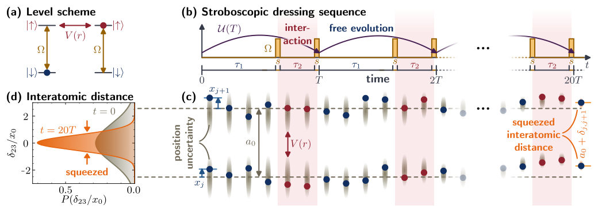
<figcaption class="paper-figure-caption"><b>Fig 1.</b> FIG. 1. Stroboscopic Rydberg dressing for generating squeezed motional states. (a) Level scheme of the atom’s electronic states: ground state |↓⟩(blue) and Rydberg state |↑⟩(red), coupled by a laser with Rabi frequency Ω. Neighboring atoms simultaneously excited to |↑⟩interact via the van der Waals potential V (r). (b) The stroboscopic dressing protocol proceeds in periodic cycles of duration T, repeated up to 20T as shown. Each cycle consists of free evolution of duration τ1, a resonant π-pulse of duration s and Rabi frequency Ωthat transfers all atoms to |↑⟩, an interaction interval of duration τ2 during which atoms in |↑⟩interact via V (r) and develop motional correlations, and a second...</figcaption>
</figure>
<figure class="paper-figure-card">
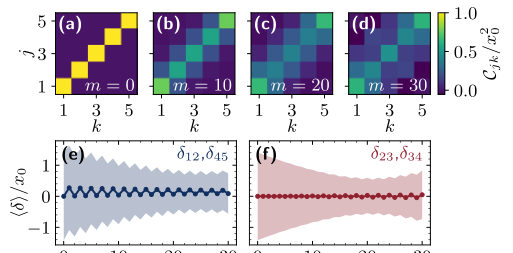
<figcaption class="paper-figure-caption"><b>Fig 2.</b> FIG. 2. Build-up of positional correlations and dy- namics of interatomic distances. (a) - (d) Positional covariance matrix Cjk/x2 0 after m = 0, 10, 20 and 30 dress- ing cycles. Starting from an uncorrelated motional ground state (a), the protocol induces positional correlations between neighboring atoms (b), (c). At m = 20 (c), reduced diagonal elements (single-atom variances) and increased off-diagonal elements (inter-atom correlations) combine to yield signifi- cant squeezing of the interatomic distances. As the sequence continues (d), variances grow again while correlations per- sist. (e), (f) Mean interatomic distances ⟨δ⟩/x0 (solid lines) in a chain of N = 5 atoms, with shading...</figcaption>
</figure>
<figure class="paper-figure-card">
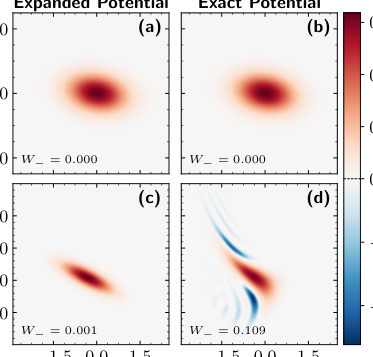
<figcaption class="paper-figure-caption"><b>Fig 3.</b> FIG. 3. Non-classical motional states. Wigner functions W(δ12, v12) of the relative coordinate δ12 and relative velocity v12 for N = 2 atoms after m = 2 dressing cycles, computed using the second-order Taylor expansion of the interaction po- tential (left column) and the exact van der Waals potential (right column). (a), (b) For parameters from Eq. (EM1) with x0/a0 ≈0.009, the harmonic approximation faithfully repro- duces the exact result: both Wigner functions are Gaussian and squeezed. (c), (d) For parameters from Eq. (EM2) with x0/a0 ≈0.057, the harmonic approximation yields a Gaus- sian squeezed state (c), but the exact dynamics produces a strongly non-Gaussian distribution with...</figcaption>
</figure>
</div>

<p><strong>Summary.</strong> The paper presents a method utilizing stroboscopic Rydberg dressing on neutral atom arrays to generate highly squeezed, non-classical motional states. By controlling the collective motion of the atoms, researchers can drastically reduce interatomic distance fluctuations that typically degrade quantum gate fidelity. This technique offers a powerful resource for enhancing precision measurements and improving quantum computation protocols.</p>
<p><strong>Why it may be interesting.</strong> This work provides a detailed theoretical blueprint for using engineered quantum correlations (squeezing) in trapped atoms to overcome fundamental limitations imposed by environmental coupling or geometric uncertainties in quantum computation.</p>
<details>
<summary>Detailed structure</summary>
<p><strong>Main problem.</strong> The primary goal is to engineer many-body motional squeezing of interatomic distances to reduce quantum gate infidelities in neutral atom arrays.</p>
<p><strong>Main result.</strong> The authors demonstrate that stroboscopic Rydberg dressing can generate highly squeezed, non-classical collective motional states characterized by Wigner negativity. This technique reduces distance uncertainty significantly below the vacuum level.</p>
<p><strong>Method.</strong> They derive the time evolution operator for the system over multiple dressing cycles and use it to analytically calculate the variances and covariances of interatomic distances using bosonic mode decomposition.</p>
<p><strong>Model / system.</strong> The platform is an array of neutral atoms (e.g., Rb) trapped in optical tweezers, interacting via a Rydberg blockade potential ($V(r) \propto 1/r^6$). The dynamics are controlled by applying periodic stroboscopic laser pulses.</p>
<p><strong>Key observables.</strong> Positional covariance matrix $C_{jk}$, variance of interatomic distances $    ext{Var}(\delta_{j, j+1})$, and the Wigner function negativity.</p>
<p><strong>Important parameters / regimes.</strong> The ratio $x_0/a_0$ (initial displacement relative to lattice spacing), the dressing phase $\omega_T$, and the anharmonicity parameter $\epsilon$.</p>
<p><strong>Assumptions / limitations.</strong> The analysis heavily relies on the fast-pulse approximation ($\Omega \gg V(r)$) and, in some derivations, assumes Gaussian probability distributions for calculating variances.</p>
<p><strong>Figures summary.</strong> Figures illustrate the reduction of interatomic distance uncertainty across multiple dressing cycles and show Wigner functions confirming non-Gaussianity when anharmonicities are present.</p>
<p><strong>Paper structure.</strong> The paper builds from establishing the need to control distance fluctuations, deriving the time evolution operator via stroboscopic dressing, decomposing this operator into independent normal modes, and finally calculating the resulting motional observables like variances and covariances.</p>
</details>
<details>
<summary>Abstract</summary>
<p>Realizing conditional quantum operations, e.g., quantum gates, for quantum computing and simulation requires controlled interactions between particles. Often, these interactions depend on the interparticle distance, and accordingly, an uncertainty of the relative particle position may translate into gate infidelities. We consider here a quantum computing platform based on an array of neutral atoms and present a method that allows to reduce the uncertainty of all interatomic distances. Our approach exploits the coupling between atomic motion and stroboscopically excited atomic Rydberg states. It allows to collectively squeeze the modes corresponding to interatomic displacements, thereby reducing distance fluctuations down to a fraction of the motional vacuum state. Furthermore, the method permits the creation of non-classical states with substantial Wigner negativity. These correlated states may allow reducing motional decoherence, increasing gate fidelity, and potentially yield a resource for quantum-enhanced metrology.</p>
</details>
<p><sub><a href="#top">↑ back to top</a></sub></p>

<p><a id="paper-2606.18084"></a></p>
<h3 id="cavity-enhanced-superconducting-response-in-an-underdoped-cuprate">⭐ <a href="http://arxiv.org/abs/2606.18084v1">Cavity-enhanced superconducting response in an underdoped cuprate</a></h3>
<p><strong>Highlighted author(s):</strong> Francesco Piazza<br>
<strong>Authors:</strong> Angela Montanaro, Vadim Plastovets, Nitesh Khatiwada, Jacopo Fiore, Giacomo Jarc, Abdullah Alabbadi, Antonio Mastropasqua, Enrico Maria Rigoni, Shahla Y. Mathengattil, Simone Dal Zilio, Francesca Fassioli Olsen, Fabio Novelli, Stephan Winnerl, Michael A. Sentef, Dante M. Kennes, Andrew J. Millis, Francesco Piazza, Daniele Fausti<br>
<strong>Type:</strong> both · <strong>Category:</strong> strongly correlated electrons · <strong>PDF:</strong> <a href="https://arxiv.org/pdf/2606.18084v1">https://arxiv.org/pdf/2606.18084v1</a><br>
<strong>Analysis basis:</strong> full PDF text, analyzed in chunks
<strong>Topic relevance:</strong> 🔥 <code>analog quantum simulation</code> <strong>4/5</strong> · 🔥 <code>correlated cavity matter</code> <strong>4/5</strong> · <code>driven-dissipative phase transition</code> <strong>3/5</strong> · <code>exotic spin models in light-matter</code> <strong>3/5</strong> · <code>quantum optics experiment</code> <strong>3/5</strong> · <code>Tavis-Cummings &amp; cavity-many-emitter</code> <strong>2/5</strong> · <code>methods for driven-dissipative</code> <strong>2/5</strong> · <code>spintronics-quantum-optics interface</code> <strong>2/5</strong> · <code>Keldysh / 2PI / non-Gaussian methods</code> <strong>1/5</strong> · <code>correlated / nonlocal dissipation</code> <strong>1/5</strong> · <code>entanglement &amp; information structure</code> <strong>1/5</strong> · <code>interference shaping light</code> <strong>1/5</strong> · <code>non-equilibrium dynamics</code> <strong>1/5</strong> · <code>non-equilibrium universality</code> <strong>1/5</strong></p>
<div class="figure-strip-hint">↔ Scroll figures horizontally</div>
<div class="paper-figures-scroll">
<figure class="paper-figure-card">
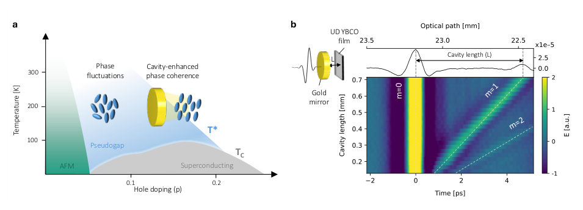
<figcaption class="paper-figure-caption"><b>Fig 1.</b> Figure 1: Cavity control of phase coherence in underdoped YBa2Cu3O7-δ. a, Phase fluctuations of the order parameter are widely discussed as an important factor limiting superconductivity in high-Tc cuprates. In underdoped (UD) samples, evidence for incoherent local pairing has been reported throughout the pseudogap phase. We investigate whether the presence of a mirror in proximity to the superconductor could effectively act as a cavity, promote phase coherence and enhance the superconducting response. b, The sketch illustrates the cavity geometry. Terahertz (THz) time-domain spectroscopy provides a direct way to track the optical path of photons inside the cavity: the delay between the...</figcaption>
</figure>
<figure class="paper-figure-card">
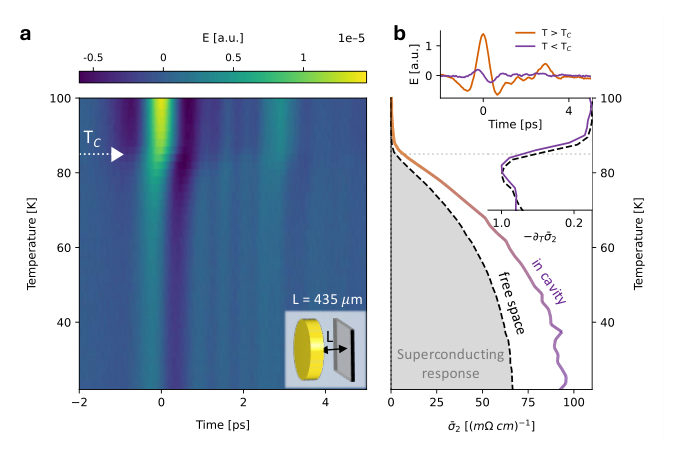
<figcaption class="paper-figure-caption"><b>Fig 2.</b> Figure 2: Enhanced superconducting response in a terahertz cavity. a, Temperature-dependent transmitted THz electric field for a representative cavity length (L=435 µm). THz traces recorded at T &gt; Tc (orange) and at T &lt; Tc (purple) are plotted in the inset of panel (b). On cooling below Tc, the THz waveform shows both a reduction in transmission and a shift in arrival time of the peak, consistent with the emergence of an inductive superconducting response. b, Frequency-averaged imaginary conductivity, ¯σ2, extracted from the THz response and plotted as a function of temperature. The frequency averaging range is (0.4 THz – 1 THz). As a measure of the condensate-related superconducting...</figcaption>
</figure>
<figure class="paper-figure-card">

<figcaption class="paper-figure-caption"><b>Fig 3.</b> Figure 3: Cavity-length depen- dence of the enhanced super- conducting response. Frequency- dependent σ2 (and σ1 in the insets) be- low (a, T = 66K) and above Tc (b, T = 90K), measured in free space (black curve) and inside the cavity (yellow, L = 20 µm). The most pronounced cavity-induced change occurs in σ2 below the superconducting transition, where the inductive response is en- hanced. The shaded areas indicate the propagated standard uncertainties. c, Frequency-averaged σ2 (and σ1 in the inset) as a function of temperature for different cavity lengths, compared to the one for YBCO in free space (black curve). The enhancement of the su- perconducting response is larger at shorter cavity...</figcaption>
</figure>
<figure class="paper-figure-card">
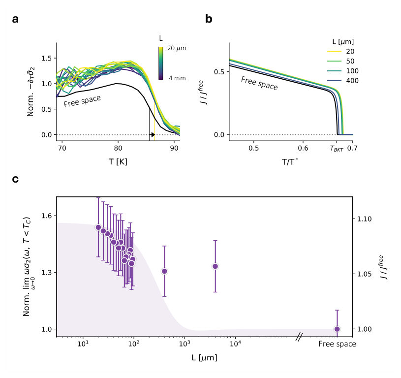
<figcaption class="paper-figure-caption"><b>Fig 4.</b> Figure 4: Signatures of enhanced phase stiffness in the cavity. a, Normalized temperature derivatives of the data in Figure 3c, highlighting the evolution of the superconducting transition inside the cavity (coloured curves) relative to the film outside the cavity (black curve). The transition shows a small upward shift of the onset temperature, indicated by the horizontal arrow. b, Results of calculations for a cavity-coupled XY /BKT model. The model captures the two main experimental trends: an increase in phase stiffness J below the superconducting transition and a cavity-dependent shift of the TBKT. c, Experimental values of ωσ2(ω →0) as a function of cavity length (fixed T = 66K). The...</figcaption>
</figure>
</div>

<p><strong>Summary.</strong> The research demonstrates that confining a superconducting film within an optical cavity enhances its superconducting response in underdoped cuprates. By measuring the change in superfluid weight via THz spectroscopy, the authors confirm that cavity confinement increases the effective phase stiffness of the superconductor. This work showcases cavity engineering as a powerful tool for controlling emergent quantum functionalities in correlated materials.</p>
<p><strong>Why it may be interesting.</strong> This work directly bridges condensed matter physics (high-Tc superconductors, phase transitions) with quantum optics/cavity QED principles. The concept of using engineered electromagnetic environments to tune fundamental material parameters like phase stiffness is highly relevant for AMO physicists working on open quantum systems and cavity coupling.</p>
<details>
<summary>Detailed structure</summary>
<p><strong>Main problem.</strong> The study investigates whether engineering the electromagnetic environment using a resonant cavity can enhance superconducting coherence, particularly by stabilizing phase fluctuations in underdoped cuprates.</p>
<p><strong>Main result.</strong> Experiments show that placing an underdoped YBCO film inside a terahertz cavity enhances the measured superfluid weight and causes an upward shift in the superconducting onset temperature. Theory confirms this enhancement is due to increased effective phase stiffness ($J$).</p>
<p><strong>Method.</strong> The research combines THz time-domain spectroscopy measurements with theoretical modeling based on the XY model for phase-fluctuating superconductors.</p>
<p><strong>Model / system.</strong> The physical system is an underdoped YBa2Cu3O7-delta thin film placed inside a tunable Fabry-Pérot terahertz cavity. The theory models superconductivity using the XY Hamiltonian, coupling superconducting phase dynamics to the quantized electromagnetic field of the cavity.</p>
<p><strong>Key observables.</strong> Superfluid weight ($ar{\sigma}_2$), superconducting onset temperature ($T_{onset}$), and the renormalized phase stiffness ($J$).</p>
<p><strong>Important parameters / regimes.</strong> Cavity length ($L$), temperature ($T$), and the ratio of cavity confinement to intrinsic material parameters.</p>
<p><strong>Assumptions / limitations.</strong> The analysis assumes the system can be described by a phase-only action after integrating out EM fields, and that measurements avoid spurious shifts caused by local heating or misalignment.</p>
<p><strong>Figures summary.</strong> Figures show temperature dependence of conductivity ($ar{\sigma}_2$) confirming enhancement inside the cavity; theoretical plots illustrate how cavity size ($L$) modifies the plasmon dispersion relation and increases the phase stiffness $J$.</p>
<p><strong>Paper structure.</strong> The paper progresses from establishing the problem (phase fluctuations limit cuprate superconductivity) to presenting THz measurements showing cavity enhancement, followed by detailed theoretical derivations using action functionals and Renormalization Group analysis to quantify the resulting increase in phase stiffness.</p>
</details>
<details>
<summary>Abstract</summary>
<p>Superconductors carry electrical current without resistance when paired electrons condense into a coherent macroscopic quantum state. In underdoped cuprates, evidence suggests that pairing-related correlations and superconducting fluctuations can survive above the temperature at which global coherence is lost, pointing to phase fluctuations as a key limitation on superconductivity in this regime. Motivated by recent demonstrations of cavity-modified collective states in quantum materials, we investigate whether superconducting coherence can be stabilized by engineering the electromagnetic environment of the superconductor. We study an underdoped YBa$_2$Cu$_3$O$_{7-δ}$ thin film in a tunable terahertz cavity formed with a semi-transparent gold mirror. From temperature-dependent terahertz transmission measurements, we find that the cavity enhances the superconducting response below the critical temperature, with an increase of the inferred superfluid weight. The effect becomes more pronounced at smaller cavity lengths and is accompanied by an upward shift of the superconducting onset temperature. Calculations based on a cavity-coupled model for phase-fluctuating superconductors capture these trends and support an interpretation in terms of cavity-enhanced phase stiffness. These results showcase the potential of cavity engineering for designing emergent functionalities in correlated systems.</p>
</details>
<p><sub><a href="#top">↑ back to top</a></sub></p>

<p><a id="paper-2606.18059"></a></p>
<h3 id="universal-scaling-and-relaxation-in-decaying-turbulence-of-bose-gases"><a href="http://arxiv.org/abs/2606.18059v1">Universal scaling and relaxation in decaying turbulence of Bose gases</a></h3>
<p><strong>Authors:</strong> Arnol D. García-Orozco, Michelle A. Moreno-Armijos, Sarah Sab, Amilson Fritsch, Vanderlei Salvador Bagnato<br>
<strong>Type:</strong> both · <strong>Category:</strong> quantum gases · <strong>PDF:</strong> <a href="https://arxiv.org/pdf/2606.18059v1">https://arxiv.org/pdf/2606.18059v1</a><br>
<strong>Analysis basis:</strong> full PDF text, analyzed in chunks
<strong>Topic relevance:</strong> 🔥 <code>non-equilibrium universality</code> <strong>5/5</strong> · 🔥 <code>analog quantum simulation</code> <strong>4/5</strong> · 🔥 <code>non-equilibrium dynamics</code> <strong>4/5</strong> · <code>Keldysh / 2PI / non-Gaussian methods</code> <strong>3/5</strong> · <code>driven-dissipative phase transition</code> <strong>3/5</strong> · <code>correlated / nonlocal dissipation</code> <strong>1/5</strong> · <code>entanglement &amp; information structure</code> <strong>1/5</strong> · <code>methods for driven-dissipative</code> <strong>1/5</strong> · <code>scars &amp; prethermalization</code> <strong>1/5</strong></p>
<div class="figure-strip-hint">↔ Scroll figures horizontally</div>
<div class="paper-figures-scroll">
<figure class="paper-figure-card">
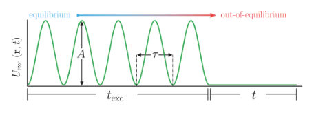
<figcaption class="paper-figure-caption"><b>Fig 1.</b> Fig. 1 A controllable time-varying magnetic field poten- tial with amplitude A drives the equilibrium BEC to an out-of-equilibrium state. The drive potential is applied for a time (texc) for around texc = 5τ , then turned off. The system evolves in the trap for a time (t) without an exter- nal potential. After this time, the trap potential is turned off, and after 30 ms of time of fligth (tTOF), the absorption imaging is taken. Reproduced from Ref. [33].</figcaption>
</figure>
<figure class="paper-figure-card">
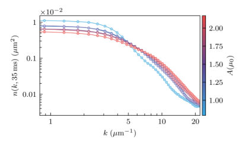
<figcaption class="paper-figure-caption"><b>Fig 2.</b> Fig. 2 Momentum distribution n(k, t = 35 ms) for differ- ent excitation amplitudes. The turbulent state in the cloud is established. The power-law behavior can be observed in the momentum range 10 µm−1 ≤k ≤17 µm−1. Repro- duced from Ref. [33].</figcaption>
</figure>
<figure class="paper-figure-card">
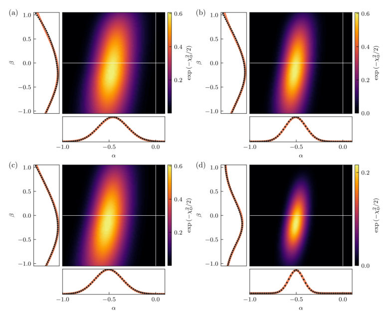
<figcaption class="paper-figure-caption"><b>Fig 3.</b> Fig. 3 Likelihood functions LA(α, β) for three different excitation amplitudes, 1.8µ0 (a), 2.0µ0 (b), and 2.2µ0 (c), and the product of all likelihood functions (d). For panels (a)–(c) we divide the function χ2(α, β) by its minimum value, which we denote by χ2(α, β), so that the maximum value of LA(α, β) is the same for all excitation amplitudes. Reproduced from Ref. [33].</figcaption>
</figure>
<figure class="paper-figure-card">
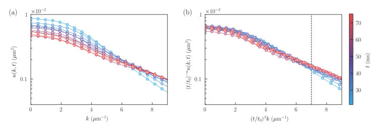
<figcaption class="paper-figure-caption"><b>Fig 4.</b> Fig. 4 (a) Momentum distributions of a turbulent state for an excitation amplitude A = 2.2µ0 at different holding times t. (b) Corresponding rescaled distributions collapse into a single universal curve, characteristic of self-similar dynamics in the turbulent regime. The universal exponents that described beaviour are α = −0.50(8) and β = −0.2(4). The vertical dashed line indicates the infrared cutoff ks, delimiting the momentum range where the scaling described by Eq. 8 holds. Reproduced from Ref. [33].</figcaption>
</figure>
<figure class="paper-figure-card">
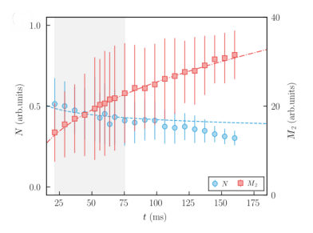
<figcaption class="paper-figure-caption"><b>Fig 5.</b> Fig. 5 Global quantities, as defined in Eqs. 9 and 10, for the excitation amplitudes of A = 1.8µ0. The shaded region corresponds to the time window in which universal behavior is observed. The left axis shows the total number of particles, N, and the universality range (ks ≤7µm−1) as a function of t. The mean kinetic energy M2 (right axis) increases with time within the same universal range. The curves follow the theoretical predictions, namely, N ∝ tα−2β and M2 ∝t−2β. Reproduced from Ref. [33].</figcaption>
</figure>
</div>

<p><strong>Summary.</strong> This review and study investigates how turbulent Bose gases relax far from equilibrium by analyzing universal scaling laws. The authors combine theory (NTFPs, WKE) with experiments on BECs to show that the decay proceeds through distinct direct and inverse cascade stages. This confirms turbulence's role in establishing universal transport dynamics in quantum many-body systems.</p>
<p><strong>Why it may be interesting.</strong> This work provides a concrete realization of non-equilibrium statistical mechanics in an ultracold atomic setting, linking fundamental concepts like wave turbulence and universality classes to measurable physical observables in quantum gases.</p>
<details>
<summary>Detailed structure</summary>
<p><strong>Main problem.</strong> The central challenge is understanding the relaxation dynamics of isolated quantum systems, particularly how far-from-equilibrium evolution in turbulent Bose gases can be described by universal scaling laws.</p>
<p><strong>Main result.</strong> The system exhibits self-similar evolution characterized by Nonthermal Fixed Points (NTFPs), demonstrating distinct direct and inverse cascade stages governed by universal power-law exponents ($\alpha$ and $eta$).</p>
<p><strong>Method.</strong> The study combines theoretical analysis using weak kinetic equations, renormalization group concepts, and differential equation approaches with experimental measurements of momentum distributions via Time-of-Flight imaging.</p>
<p><strong>Model / system.</strong> The system under investigation is a Bose gas (e.g., $^{87}	ext{Rb}$ BEC) driven into a turbulent, far-from-equilibrium state using controlled excitation potentials in an ultracold atomic trap.</p>
<p><strong>Key observables.</strong> Momentum distribution $n(k, t)$, average particle number ($N$), and mean kinetic energy ($\langle k^2 
angle$).</p>
<p><strong>Important parameters / regimes.</strong> Universal scaling exponents ($\alpha$ and $eta$), momentum scales (UV/IR limits), and time evolution relative to characteristic times ($t/t_0$).</p>
<p><strong>Assumptions / limitations.</strong> The emergence of universal dynamical scaling despite different microscopic interactions, and the applicability of simplified differential equations in specific momentum regimes.</p>
<p><strong>Figures summary.</strong> Figures illustrate the collapse of momentum distributions into single universal functions after rescaling for both direct (depletion) and inverse (repopulation) cascades. One figure shows the time evolution of low-momentum states ($n(k 	o 0, t)$) validating scaling laws.</p>
<p><strong>Paper structure.</strong> The paper progresses from establishing the theoretical framework using weak kinetic equations and NTFP concepts to detailing experimental measurements that confirm self-similar scaling. It then presents alternative analytical methods (differential equations) to extract universal exponents ($\alpha$ and $eta$) from limited data regions, confirming consistency across different analysis techniques.</p>
</details>
<details>
<summary>Abstract</summary>
<p>Understanding the relaxation dynamics of isolated quantum systems remains a central challenge in nonequilibrium physics. In this short review, we discuss recent experimental and theoretical advances in universal dynamics of turbulent Bose gases, with particular emphasis on nonthermal fixed points and wave turbulence in our experimental system at the São Carlos Institute of Physics of the University of São Paulo. We highlight the emergence of self-similar scaling behavior and its connection to particle and energy transport across momentum scales. In addition, we discuss an approach in which a differential equation has a universal scaling solution, providing a practical framework for extracting universal exponents from limited regions of the momentum distribution. Furthermore, we recap experimental observations of direct and inverse cascades in a three-dimensional trapped Bose--Einstein condensate, revealing distinct relaxation stages governed by universal scaling laws. These results demonstrate that turbulence plays a key role in far-from-equilibrium dynamics, offering a unified perspective on transport processes and thermalization in quantum many-body systems.</p>
</details>
<p><sub><a href="#top">↑ back to top</a></sub></p>

<p><a id="paper-2606.18091"></a></p>
<h3 id="quantum-statistical-enhancement-of-collective-behaviour-in-a-bosonic-active-ising-model"><a href="http://arxiv.org/abs/2606.18091v1">Quantum statistical enhancement of collective behaviour in a bosonic active Ising model</a></h3>
<p><strong>Authors:</strong> Kian L. Assent, Emil Strauch, Sabine H. L. Klapp, André Eckardt, Alexander Schnell<br>
<strong>Type:</strong> theory · <strong>Category:</strong> statistical mechanics · <strong>PDF:</strong> <a href="https://arxiv.org/pdf/2606.18091v1">https://arxiv.org/pdf/2606.18091v1</a><br>
<strong>Analysis basis:</strong> full PDF text, analyzed in chunks
<strong>Topic relevance:</strong> 🔥 <code>analog quantum simulation</code> <strong>4/5</strong> · 🔥 <code>driven-dissipative phase transition</code> <strong>4/5</strong> · 🔥 <code>methods for driven-dissipative</code> <strong>4/5</strong> · <code>correlated / nonlocal dissipation</code> <strong>3/5</strong> · <code>exotic spin models in light-matter</code> <strong>3/5</strong> · <code>non-equilibrium dynamics</code> <strong>3/5</strong> · <code>non-equilibrium universality</code> <strong>3/5</strong> · <code>Keldysh / 2PI / non-Gaussian methods</code> <strong>1/5</strong> · <code>entanglement &amp; information structure</code> <strong>1/5</strong> · <code>spintronics-quantum-optics interface</code> <strong>1/5</strong></p>
<div class="figure-strip-hint">↔ Scroll figures horizontally</div>
<div class="paper-figures-scroll">
<figure class="paper-figure-card">
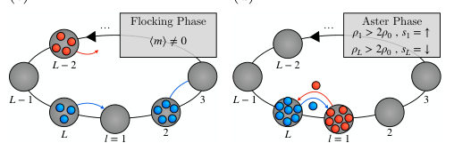
<figcaption class="paper-figure-caption"><b>Fig 1.</b> FIG. 1: (a) The particle’s spin species governs its pre- ferred direction of movement. (b) The lattice sites of the AIM are initially occupied by a random distribution of particles. (c) Large groups of same-species particles mov- ing around the AIM are considered a flock, while (d) a large group of opposite-species-particles remaining dor- mant on neighboring sites are called an aster.</figcaption>
</figure>
<figure class="paper-figure-card">
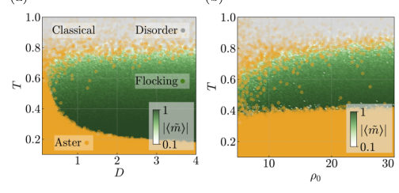
<figcaption class="paper-figure-caption"><b>Fig 2.</b> FIG. 2: Phase diagram of the classical active Ising model, Eq. (4), (a) in the T −D plane (for ε = 0.7, γ = 1, ρ0 = 10 and L = 100) and (b) in the T −ρ0 plane for D = 1 (other parameters as in (a)). Yellow dots indicate the formation of asters (according to the critierion given the main text). The results are consistent with [44].</figcaption>
</figure>
<figure class="paper-figure-card">
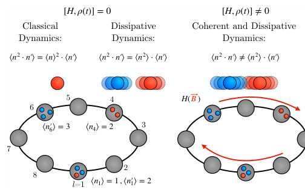
<figcaption class="paper-figure-caption"><b>Fig 3.</b> FIG. 3: Different setups of the AIM under investigation and the corresponding master equations. In the classical limit, all quantum effects are neglected when evaluat- ing the expectation values. When focusing on dissipative quantum effects, the coherences resulting from a sepa- ration of ⟨n · n′⟩are set to zero. Lastly, to simulate an external influence, in our case a magnetic field, the sys- tem is exposed to an external Hamiltonian H( ⃗B) ̸= 0. The resulting dynamics include quantum coherences.</figcaption>
</figure>
<figure class="paper-figure-card">
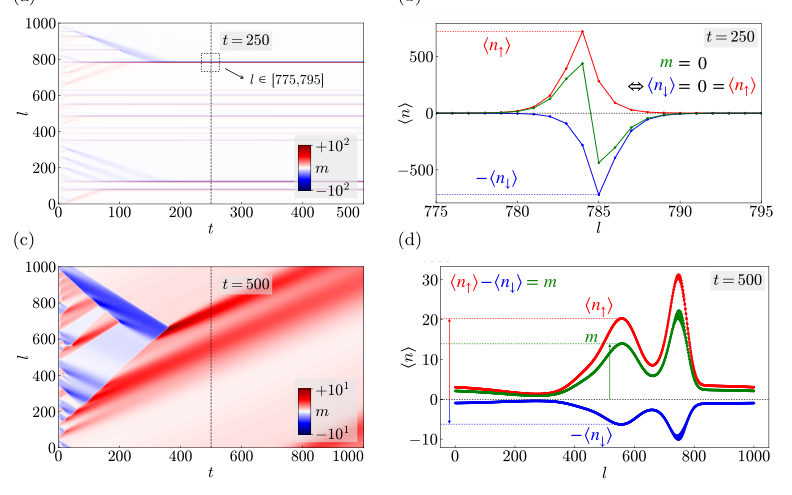
<figcaption class="paper-figure-caption"><b>Fig 4.</b> FIG. 4: Dynamics of the mean-field kinetic equations of the AIM with classical particles (L = 1000, N = 10000, D = 1 and ε = 0.7) developing (a) asters at T = 0.35 as well as (c) flocks at T = 0.45. (b),(d) Spin densities and magnetization along vertical cuts through (a) and (c), respectively, at a late time [indicated by vertical dashed lines in (a) and (c)]. In (b) we zoom into a few sites, to resolve the shape of an aster.</figcaption>
</figure>
<figure class="paper-figure-card">
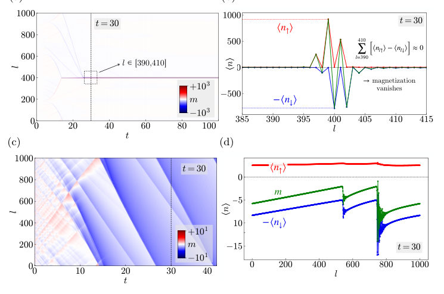
<figcaption class="paper-figure-caption"><b>Fig 5.</b> FIG. 5: Dynamics of a large quantum AIM of ideal bosons (L = 1000, N = 10000 and ε = 0.7) developing (a) asters at D = 0.2 and T = 10 as well as (c) flocks at D = 3, T = 10. (b),(d) Absolute magnetization of each lattice site at a late time of figures (a) and (c), respectively [indicated by vertical dashed lines in (a) and (c)]. The aster phase evolves differently when compared to the classical model, with multiple neighbouring peaks of opposite magnetization. Additionally, the flock appears sharply localized at its edge instead of the continuous curve found in Fig. 4.</figcaption>
</figure>
</div>

<p><strong>Summary.</strong> This paper analyzes a bosonic active Ising model to study emergent collective behaviors like flocking and aster formation in non-equilibrium settings. The key finding is that bosonic quantum statistics significantly enhance the stability of these ordered phases compared to classical models. Using mean-field theory, the authors map out phase diagrams showing how this enhancement competes with suppression from external magnetic fields.</p>
<p><strong>Why it may be interesting.</strong> This work provides a concrete theoretical framework for understanding non-equilibrium collective dynamics in quantum many-body systems. The explicit demonstration of 'bosonic enhancement' offers insights into how quantum statistics can stabilize complex ordered phases beyond classical mean-field predictions, which is highly relevant to AMO physics and quantum simulation.</p>
<details>
<summary>Detailed structure</summary>
<p><strong>Main problem.</strong> The study investigates how bosonic quantum statistics enhance collective behaviors like flocking and aster formation in an active Ising model, contrasting these findings with classical models and other quantum generalizations.</p>
<p><strong>Main result.</strong> Bosonic indistinguishability markedly enhances the stability of both flocking and aster phases compared to classical predictions, allowing these ordered states to persist at higher temperatures. Furthermore, the analysis maps out how external transverse magnetic fields suppress these collective phenomena.</p>
<p><strong>Method.</strong> The authors employ a mean-field approximation on the Lindblad master equation for ideal bosons, deriving closed kinetic equations for single-particle density matrices and mean occupations.</p>
<p><strong>Model / system.</strong> The system is a one-dimensional quantum lattice variant of the Active Ising Model (AIM) based on ideal bosons with spin degrees of freedom ($\uparrow$ and $\downarrow$). The dynamics are governed by a Lindblad master equation incorporating coherent, spin-flip, and biased hopping processes.</p>
<p><strong>Key observables.</strong> Mean magnetization ($\langle m 
angle$), local magnetizations ($
ho_l, 
ho_{l+1}$), mean occupations ($\langle n_{ls} 
angle$), and the critical temperature for phase transitions.</p>
<p><strong>Important parameters / regimes.</strong> Activity parameter ($\epsilon$), inverse temperature ($eta=1/T$), external transverse magnetic field strength ($\omega$), and system density ($
ho_0$).</p>
<p><strong>Assumptions / limitations.</strong> The analysis relies heavily on mean-field approximations and the use of Wick's theorem to truncate the BBGKY hierarchy, neglecting higher-order correlations.</p>
<p><strong>Figures summary.</strong> Figures illustrate phase diagrams comparing classical vs. quantum predictions (showing enhanced stability in the quantum case), and dynamic simulations showing the formation and evolution of large moving flocks or stationary asters under different parameter regimes.</p>
<p><strong>Paper structure.</strong> The paper progresses from establishing the full quantum master equation to deriving mean-field kinetic equations for occupations, analyzing the classical limit recovery, quantifying bosonic enhancement effects, and finally mapping out phase diagrams dependent on temperature, density, and external fields.</p>
</details>
<details>
<summary>Abstract</summary>
<p>Collective behaviour such as flocking (the collective motion of a spontaneously formed group along a common direction) or aster formation (the binding of opposing flocks, inhibiting each others motion) are intriguing emergent phenomena in active systems with local alignment rules. Until recently, their occurrence was mainly studied for classical systems, a prime example being the active Ising model (AIM), which translates the main ingredients of flocking and aster formation (i.e., alignment and self-propulsion) to a lattice framework. Here we introduce and study a one-dimensional (1D) quantum lattice variant of the AIM, based on ideal bosons with a spin degree of freedom. We find that both the collective behaviours of the 1D classical model, flocking and aster formation, are markedly enhanced by the bosonic quantum statistics. This contrasts with a recent quantum generalization of the AIM based onto hard-core bosons [Khasseh et al., Phys. Rev. Lett. 135, 248302 (2025)], where flocking, but neither its quantum-statistical stabilization nor aster states were observed as a consequence of interactions. Moreover, we investigate the competition of this quantum statistical stabilization of collective phases with their suppression by the quantum fluctuations induced by a transverse external magnetic field.</p>
</details>
<p><sub><a href="#top">↑ back to top</a></sub></p>

<p><a id="paper-2606.18202"></a></p>
<h3 id="einstein-podolsky-rosen-correlations-between-mechanical-oscillators-revealed-through-su11-interferometry"><a href="http://arxiv.org/abs/2606.18202v1">Einstein-Podolsky-Rosen correlations between mechanical oscillators revealed through SU(1,1) interferometry</a></h3>
<p><strong>Authors:</strong> Max-Emanuel Kern, Stefano Marti, Raquel Garcia-Belles, Andraz Omahen, Igor Kladaric, Arianne Brooks, Yiwen Chu, Matteo Fadel<br>
<strong>Type:</strong> experiment · <strong>Category:</strong> quantum information and computing · <strong>PDF:</strong> <a href="https://arxiv.org/pdf/2606.18202v1">https://arxiv.org/pdf/2606.18202v1</a><br>
<strong>Analysis basis:</strong> full PDF text, analyzed in chunks
<strong>Topic relevance:</strong> 🔥 <code>QC/QI experiment</code> <strong>4/5</strong> · <code>entanglement &amp; information structure</code> <strong>3/5</strong> · <code>interference shaping light</code> <strong>3/5</strong> · <code>quantum optics experiment</code> <strong>3/5</strong> · <code>analog quantum simulation</code> <strong>2/5</strong> · <code>quantum measurements</code> <strong>2/5</strong> · <code>Tavis-Cummings &amp; cavity-many-emitter</code> <strong>1/5</strong> · <code>correlated cavity matter</code> <strong>1/5</strong> · <code>driven-dissipative phase transition</code> <strong>1/5</strong> · <code>methods for driven-dissipative</code> <strong>1/5</strong> · <code>non-equilibrium dynamics</code> <strong>1/5</strong></p>
<div class="figure-strip-hint">↔ Scroll figures horizontally</div>
<div class="paper-figures-scroll">
<figure class="paper-figure-card">
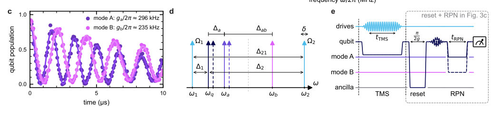
<figcaption class="paper-figure-caption"><b>Fig 1.</b> FIG. 1. Device and two-mode squeezing engineering. (a) Micrograph of the device where two HBARs (AlN on sapphire) are bonded on top of a transmon qubit (Al on sapphire). The two elongated capacitive pads of the qubit terminate with antennas designed to optimize the coupling. Insets show detailed views of the Josephson junction and one antenna-HBAR region. (b) Spectroscopy of the HBARs’ phonon modes measured through vacuum Rabi oscillations versus qubit frequency. The chevron patterns show that the two HBARs have two distinct spectra with non-overlapping modes, allowing us to select the modes A and B that are localized in the two spatially-separated resonators. (c) Vacuum Rabi oscillations...</figcaption>
</figure>
<figure class="paper-figure-card">
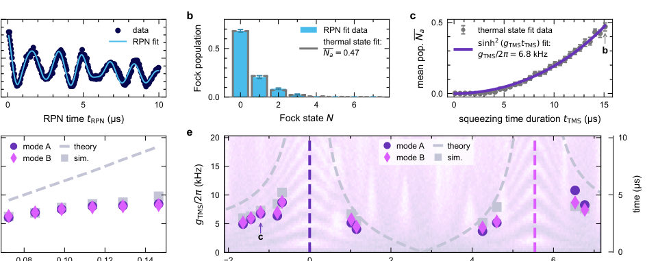
<figcaption class="paper-figure-caption"><b>Fig 2.</b> FIG. 2. TMS rate characterization. (a) Typical qubit population dynamics when on resonance with the mode to be measured (mode A here) for a time tRPN, see Fig. 1e. The numerical RPN fit extracts the Fock state distribution. (b) Fock state distribution obtained from the data in panel a, with a fit to a thermal state distribution to extract the mean phonon number Na. (c) Mean population over time Na(tTMS), extracted by repeating the procedure of panels a, b for different TMS durations tTMS, with a fit to extract the rate. The arrow indicates the data point from panel b. (d) TMS rate gTMS, extracted as shown in panels a-c, as a function of the dimensionless parametric drive strength ξ1ξ2 at...</figcaption>
</figure>
<figure class="paper-figure-card">
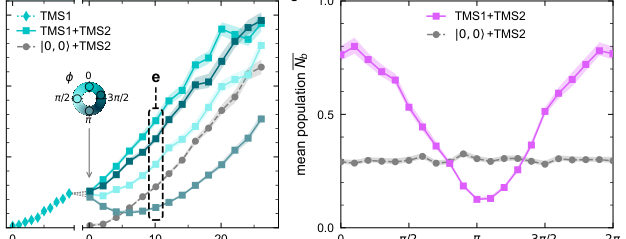
<figcaption class="paper-figure-caption"><b>Fig 3.</b> FIG. 3. Mechanical SU(1,1) interferometry. (a) Schematic of an SU(1,1) interferometer, where the output is sensitive to the phase ϕ accumulated between two TMS operations. (b) Visualization of the SU(1,1) interferometer dynamics on a hyperboloid and projections onto the xy- and xz-planes. After the initial TMS1 boost along x, the phase ϕ gives a rotation around z. The final TMS2 boost, along x, results in an output population that depends on ϕ. (c) Pulse sequence for the interferometer experiment, similar to Fig. 1e but including a second TMS operation with a phase ϕ. (d) Mean population in mode B during TMS1 and TMS2 over time for four different phases ϕ, as indicated by the inset color...</figcaption>
</figure>
<figure class="paper-figure-card">
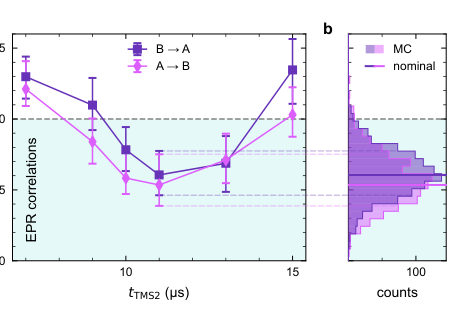
<figcaption class="paper-figure-caption"><b>Fig 4.</b> FIG. 4. Witnessing EPR correlations. (a) Minimum of the EPR steering criterion E(ϕ) extracted from SU(1,1) interfer- ometer fringes (see Fig. 3e) for tTMS1 = 9 µs at the optimal phase (ϕ ≈π). (b) Monte Carlo histogram used to determine the error bars of panel a. At the minimum of tTMS2 = 11 µs, we find 99% (98%) of the Monte Carlo samples exhibit EPR correlations for the steering direction B→A (A→B).</figcaption>
</figure>
</div>

<p><strong>Summary.</strong> The researchers experimentally demonstrated continuous-variable Einstein–Podolsky–Rosen correlations between two macroscopically separated mechanical oscillators. They achieved this by coupling the resonators to a superconducting qubit and engineering a Two-Mode Squeezing (TMS) interaction, which functions as the core element of an SU(1,1) interferometer. This work confirms that quantum correlations stronger than entanglement can be observed in large-scale physical systems.</p>
<p><strong>Why it may be interesting.</strong> This work bridges macroscopic quantum mechanics with fundamental quantum information protocols by using mechanical oscillators as a robust platform for continuous-variable entanglement witnesses. It expands the operational toolbox in cQAD systems.</p>
<details>
<summary>Detailed structure</summary>
<p><strong>Main problem.</strong> To experimentally observe continuous-variable Einstein–Podolsky–Rosen (EPR) correlations between two spatially-separated mechanical oscillators, which are quantum correlations stronger than entanglement.</p>
<p><strong>Main result.</strong> The experiment successfully observed these continuous-variable EPR correlations by realizing a mechanical SU(1,1) interferometer using engineered Two-Mode Squeezing (TMS) interactions. This demonstrates that macroscopic systems can exhibit quantum correlations beyond simple entanglement.</p>
<p><strong>Method.</strong> The study employs parametric driving to engineer the TMS interaction between two high-overtone bulk acoustic wave resonators coupled via a superconducting qubit. Quantum correlations are then witnessed by implementing an SU(1,1) interferometer sequence.</p>
<p><strong>Model / system.</strong> The platform is a circuit quantum acoustodynamics (cQAD) device featuring two HBARs coupled to a transmon qubit. The dynamics are modeled using Hamiltonians that allow for the generation of effective Two-Mode Squeezing (TMS) interactions, which replace traditional beam splitters in the interferometer.</p>
<p><strong>Key observables.</strong> EPR steering criterion $E(\phi)$, output phonon number $\langle N_{	ext{out}} 
angle$, and interference fringes observed by measuring output populations as a function of relative phase $\phi$.</p>
<p><strong>Important parameters / regimes.</strong> Effective mass ($\sim 16 \, \mu	ext{g}$), coupling strengths ($g_a, g_b$), parametric drive strength, and the time duration of the squeezing operations.</p>
<p><strong>Assumptions / limitations.</strong> The primary assumption is that the engineered TMS interaction accurately models the required quantum operation for the interferometer. Theoretical predictions for the TMS rate showed minor deviations from measurement.</p>
<p><strong>Figures summary.</strong> Figures detail the device micrograph and spectroscopy confirming non-overlapping phonon modes, followed by characterization of the TMS rate dependence on drive strength, and finally showing interference fringes and the minimum value of the EPR steering criterion $E(\phi)$ vs. phase $\phi$.</p>
<p><strong>Paper structure.</strong> The paper first introduces the physical platform (cQAD) and the goal of observing strong quantum correlations. It then details the characterization of the key interaction (TMS rate calibration). Finally, it applies this calibrated interaction to build and test the mechanical SU(1,1) interferometer to witness EPR steering.</p>
</details>
<details>
<summary>Abstract</summary>
<p>Quantum correlations are essential for achieving quantum advantage in computing, communication and sensing. Moreover, their observation challenges and constrains our fundamental understanding of nature. Mechanical oscillators in the quantum regime provide an appealing platform for preparing and investigating quantum correlations at macroscopic scales. Despite substantial progress, however, continuous-variable quantum correlations stronger than entanglement have not yet been observed in this macroscopic regime. Here, we report the experimental observation of continuous-variable Einstein-Podolsky-Rosen correlations between two spatially-separated mechanical oscillators with an effective mass of $\sim 16 \,μg$ each. This is achieved by coupling them to a superconducting qubit which allows for engineering a two-mode squeezing interaction when parametrically driven. Crucially, we show that this interaction can be used to witness quantum correlations through the realization of a mechanical SU(1,1) interferometer. Our results expand the toolbox of operations in circuit quantum acoustodynamics and demonstrate that quantum correlations stronger than entanglement can also be observed in macroscopic systems, thereby shedding light on the boundary between quantum and classical regimes.</p>
</details>
<p><sub><a href="#top">↑ back to top</a></sub></p>

<p><a id="paper-2606.17866"></a></p>
<h3 id="experimental-characterization-and-modeling-of-measurement-induced-state-transitions-in-a-fluxonium-superconducting-qubit"><a href="http://arxiv.org/abs/2606.17866v1">Experimental Characterization and Modeling of Measurement-Induced State-Transitions in a Fluxonium Superconducting Qubit</a></h3>
<p><strong>Authors:</strong> Martijn F. S. Zwanenburg, Jinlun Hu, Eugene Y. Huang, Figen Yilmaz, Siddharth Singh, Christian Kraglund Andersen<br>
<strong>Type:</strong> both · <strong>Category:</strong> quantum information and computing · <strong>PDF:</strong> <a href="https://arxiv.org/pdf/2606.17866v1">https://arxiv.org/pdf/2606.17866v1</a><br>
<strong>Analysis basis:</strong> full PDF text, analyzed in chunks
<strong>Topic relevance:</strong> 🔥 <code>QC/QI experiment</code> <strong>4/5</strong> · 🔥 <code>measurement-induced transitions</code> <strong>4/5</strong> · <code>methods for driven-dissipative</code> <strong>3/5</strong> · <code>quantum measurements</code> <strong>3/5</strong> · <code>correlated / nonlocal dissipation</code> <strong>2/5</strong> · <code>non-equilibrium dynamics</code> <strong>2/5</strong> · <code>Keldysh / 2PI / non-Gaussian methods</code> <strong>1/5</strong> · <code>driven-dissipative phase transition</code> <strong>1/5</strong> · <code>quantum optics experiment</code> <strong>1/5</strong></p>
<div class="figure-strip-hint">↔ Scroll figures horizontally</div>
<div class="paper-figures-scroll">
<figure class="paper-figure-card">
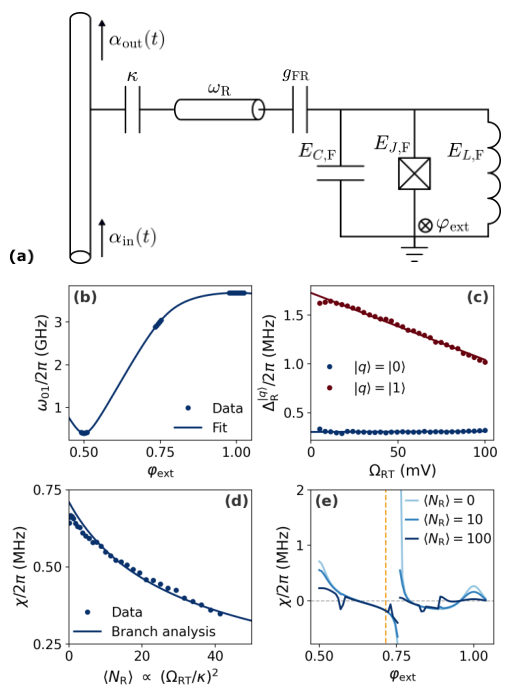
<figcaption class="paper-figure-caption"><b>Fig 1.</b> FIG. 1. (a) Circuit diagram of the fluxonium with a ca- pacitively coupled readout resonator which, in turn, is ca- pacitively coupled to a transmission line. (b) Two-tone spec- troscopy data and fit used to extract the fluxonium’s energy parameters. (c) Qubit-state-dependent resonator frequencies ∆|q⟩ R = ω|q⟩ R −ωR at φext = 0.5 with the fluxonium prepared in |q⟩as a function of the room temperature (RT) readout amplitude ΩRT. The experimental data is linearly extrapo- lated (solid lines) to ΩRT = 0 to obtain the vacuum resonator frequencies used to fit ωR and gFR. (d) Dispersive shift χ as a function of the drive strength expressed through the aver- age photon number ⟨NR⟩. The data is...</figcaption>
</figure>
<figure class="paper-figure-card">
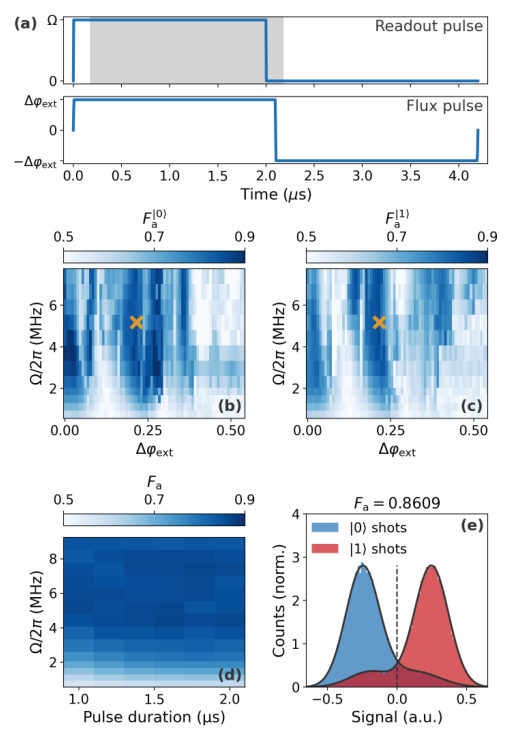
<figcaption class="paper-figure-caption"><b>Fig 2.</b> FIG. 2. (a) Unmodulated readout pulse and the net-zero flux pulse used for these experiments. The shaded area indicates the readout acquisition window. (b), (c) Assignment fidelity F |q⟩ a of the |0⟩and |1⟩state, respectively, as a function of the flux pulse amplitude ∆φext and the readout drive strength. The qubit is initialized at the sweet spot φext = 0.5, and tuned to the respective external fluxes with a fast flux pulse for readout. The marked point indicates the readout parame- ters used in panels (d) and (e) and in later parts of the work. (d) Assignment fidelity as a function of the readout pulse du- ration and drive strength. The integration time is fixed at 2 µs. (e) Single-shot...</figcaption>
</figure>
<figure class="paper-figure-card">
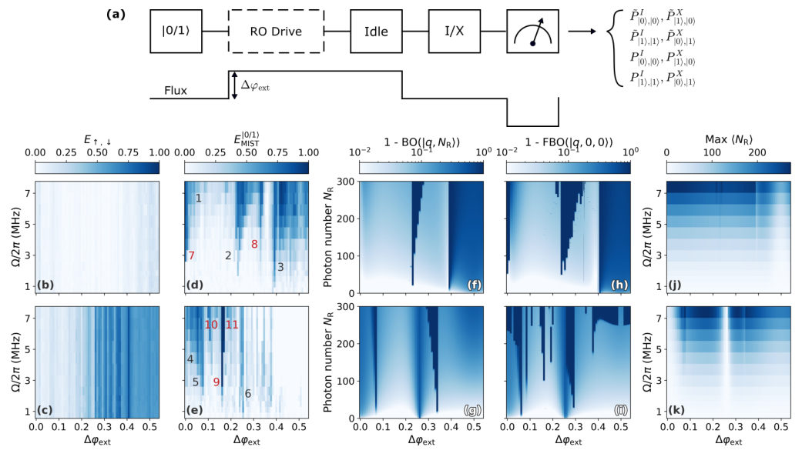
<figcaption class="paper-figure-caption"><b>Fig 3.</b> FIG. 3. (a) Circuit diagram of the experiment used to characterize MIST. The qubit is initialized in |0⟩or |1⟩, and tuned away from sweet spot by ∆φext with a fast flux pulse. Next, an optional readout drive pulse is played, followed by an idle duration to account for the time required for the resonator to deplete. The qubit is readout at the flux-point indicated in Figs. 2(b),(c) after an optional X operation performed at sweet spot. (b)-(k) Numerical and experimental results for a 1 µs readout drive pulse as a function of the flux pulse amplitude ∆φext and with the qubit initialized in |0⟩(panels (b), (d), (f), (h) and (j)) or in |1⟩(panels (c), (e), (g), (i) and (k)). (b), (c)...</figcaption>
</figure>
<figure class="paper-figure-card">
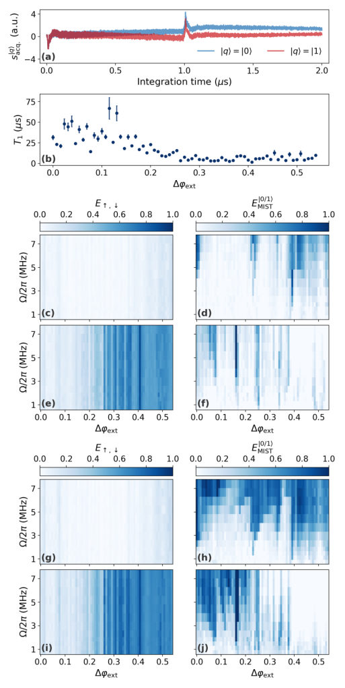
<figcaption class="paper-figure-caption"><b>Fig 4.</b> FIG. 4. (a) Demodulated, acquired traces along the axis of maximum signal difference as a function of the integration time. (b) T1 as a function of the flux pulse amplitude ∆φext. (c)-(f), (g)-(j) Experimental results analogous to Figs. 3(b)- (e) in the main text, but with a 0.5 µs and 2 µs readout drive pulse duration, respectively. Panels (c)-(f) and (g)-(j) show the measured values for E↑, E|0⟩ MIST, E↓and E|1⟩ MIST, respec- tively.</figcaption>
</figure>
<figure class="paper-figure-card">
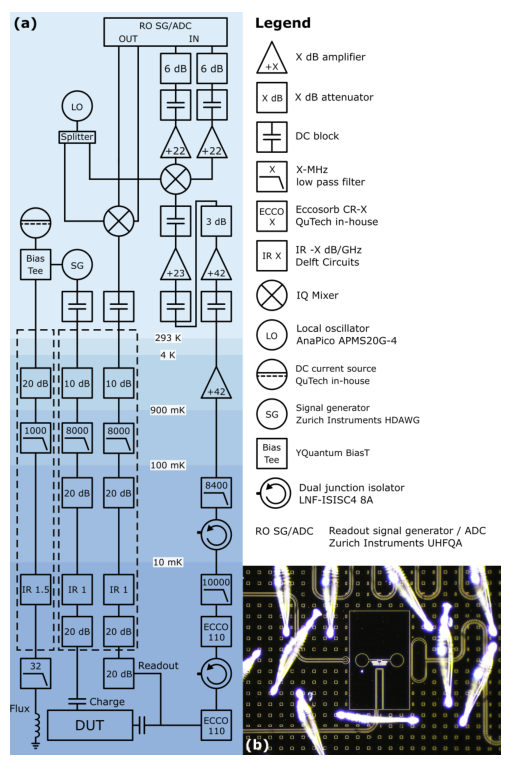
<figcaption class="paper-figure-caption"><b>Fig 5.</b> FIG. 5. (a) Schematic of the electronic setup. (b) Optical microscope image of the device.</figcaption>
</figure>
</div>

<p><strong>Summary.</strong> This research experimentally and theoretically characterizes Measurement-Induced State-Transitions (MIST) in a fluxonium qubit during microwave readout. By incorporating the effects of array modes into advanced theoretical models, the authors accurately predict error hotspots across the entire external flux range. This work is crucial for improving the fidelity and scalability of superconducting quantum processors.</p>
<p><strong>Why it may be interesting.</strong> This work is highly relevant as it tackles fundamental limitations in superconducting quantum hardware readout fidelity by modeling complex, non-linear coupling mechanisms involving higher-order circuit modes.</p>
<details>
<summary>Detailed structure</summary>
<p><strong>Main problem.</strong> The study characterizes Measurement-Induced State-Transitions (MIST) in a fluxonium superconducting qubit, which are non-ideal errors arising during dispersive quantum non-demolition (QND) readout.</p>
<p><strong>Main result.</strong> The theory accurately predicts multiple regions of increased MIST, and these errors are shown to be significantly influenced by the transmission-line-like array modes of the superinductor.</p>
<p><strong>Method.</strong> The work combines experimental characterization across the full flux range with advanced numerical simulations using Floquet branch analysis to model error sources.</p>
<p><strong>Model / system.</strong> The system is a fluxonium superconducting qubit coupled to a readout resonator and an array of Josephson junctions forming the superinductor. The Hamiltonian incorporates terms for the fluxonium, resonator, and multiple array modes.</p>
<p><strong>Key observables.</strong> Measurement-Induced State-Transitions (MIST) occurrence, assignment fidelity ($F_{|q
angle_a}$), state-dependent resonator frequency shifts ($\Delta\omega_R$), and the dispersive shift $\chi$.</p>
<p><strong>Important parameters / regimes.</strong> External flux range ($\phi_{	ext{ext}}$), readout drive strength ($\Omega_{	ext{RT}}$ or $\Omega$), and the coupling strengths to array modes.</p>
<p><strong>Assumptions / limitations.</strong> The analysis relies on approximations such as assuming the resonator is in equilibrium for calculating photon number, and using semi-classical methods for simulating the cavity field evolution.</p>
<p><strong>Figures summary.</strong> Figures detail spectroscopic measurements (e.g., qubit frequency vs. flux), readout fidelity dependence on drive strength, and calculated error terms ($E^{MIST}$) plotted against external flux or drive amplitude, often visualized via branch overlap analysis.</p>
<p><strong>Paper structure.</strong> The paper progresses from initial parameter extraction using spectroscopy to developing an error separation model that distinguishes MIST errors from other decoherence sources. It then applies advanced Floquet branch analysis (including array modes) to map out the full phase space of MIST susceptibility.</p>
</details>
<details>
<summary>Abstract</summary>
<p>Superconducting qubits are most often measured using dispersive readout, which, ideally, implements a projective quantum non-demolition (QND) measurement. While a larger readout drive can increase the signal and, thus, reduce discrimination errors in the readout, strong microwave drives may also cause non-QND errors by driving the qubit to a state outside the computational subspace. In this work, we experimentally characterize measurement-induced state transitions (MIST) in a fluxonium qubit over its full external flux range. We further numerically calculate the MIST errors, and find that the theory accurately predicts eleven experimentally identified regions with increased MIST. In addition to transitions to higher fluxonium levels, we also find that, at certain flux points, MIST errors are dominated by transitions that include the transmission-line-like array modes of the fluxonium's superinductor. The excellent match between theory and experiment validates that the models accurately predict the occurrence of MIST in these systems, and further highlights the influence of array modes in fluxonium readout.</p>
</details>
<p><sub><a href="#top">↑ back to top</a></sub></p>

<p><a id="paper-2606.17624"></a></p>
<h3 id="work-extraction-via-backward-motion-in-optimal-closed-loop-stochastic-control"><a href="http://arxiv.org/abs/2606.17624v1">Work Extraction via Backward Motion in Optimal Closed-Loop Stochastic Control</a></h3>
<p><strong>Authors:</strong> Luis Frieder Reinalter, Emanuele Panizon, Lokesh Muruga, Clemens Bechinger<br>
<strong>Type:</strong> both · <strong>Category:</strong> statistical mechanics · <strong>PDF:</strong> <a href="https://arxiv.org/pdf/2606.17624v1">https://arxiv.org/pdf/2606.17624v1</a><br>
<strong>Analysis basis:</strong> full PDF text, analyzed in chunks
<strong>Topic relevance:</strong> 🔥 <code>quantum measurements</code> <strong>4/5</strong> · <code>methods for driven-dissipative</code> <strong>3/5</strong> · <code>non-equilibrium dynamics</code> <strong>3/5</strong> · <code>non-equilibrium universality</code> <strong>3/5</strong> · <code>Keldysh / 2PI / non-Gaussian methods</code> <strong>2/5</strong> · <code>driven-dissipative phase transition</code> <strong>2/5</strong> · <code>Frenkel-Kontorova</code> <strong>1/5</strong> · <code>analog quantum simulation</code> <strong>1/5</strong> · <code>correlated / nonlocal dissipation</code> <strong>1/5</strong> · <code>measurement-induced transitions</code> <strong>1/5</strong></p>
<div class="figure-strip-hint">↔ Scroll figures horizontally</div>
<div class="paper-figures-scroll">
<figure class="paper-figure-card">
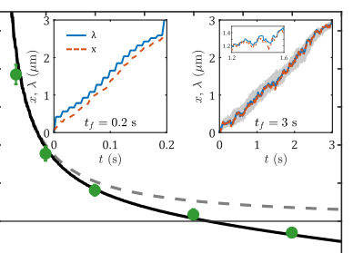
<figcaption class="paper-figure-caption"><b>Fig 1.</b> Figure 1. Average work ⟨W⟩versus the protocol duration tf. Symbols are experimental values obtained from RL-identified optimal policies, the solid and dashed lines denotes the ana- lytical solution for the optimal closed-loop protocol and that without feedback. Insets: representative trap trajectories λt and corresponding particle trajectories xt for tf = 0.2 s and 3 s. For tf = 0.2 s, the particle systematically lags behind the trap, and variations between experiments are barely visible. For tf = 3 s, the particle remains closer to the trap trajectory, and individual realizations exhibit much larger scatter (gray band denotes scatter across 100 repeated realizations).</figcaption>
</figure>
<figure class="paper-figure-card">
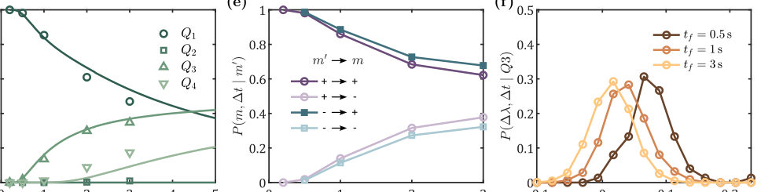
<figcaption class="paper-figure-caption"><b>Fig 2.</b> Figure 2. (a)–(c) Representative action distributions for tf = 0.5 s, 1 s, and 3 s, respectively, classified by trap displacement ∆λ and work increment ∆W. Forward and backward steps correspond to positive and negative ∆λ, respectively. The quadrants denote forward work-costing steps (Q1), backward work-costing steps (Q2), backward work-extracting steps (Q3), and forward work-extracting steps (Q4). Short protocols are dominated by Q1, whereas increasing tf enhances the population of work- extracting Q3 events. (d) Normalized quadrant occupation probabilities P(Qi) as a function of tf. Symbols are experimental data from RL-identified optimal policies; solid lines are theoretical predictions...</figcaption>
</figure>
<figure class="paper-figure-card">
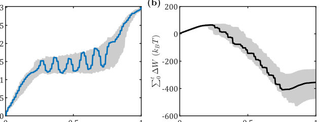
<figcaption class="paper-figure-caption"><b>Fig 3.</b> Figure 3. (a) RL-optimized trap trajectory for tf = 1 s in the presence of an externally imposed, time-dependent perturbation. The blue curve shows a single realization of the optimal feedback protocol identified by RL, while the gray band indicates the scatter between 100 individual experiments. The trap trajectory first approaches the perturbed region, remains there for an extended part of the protocol, and then reaches the target. Oscillations visible in individual realizations arise from the external drive and largely average out over many realizations because the driving phase is randomized. (b) Corresponding accumulated work for the same protocol. After an initial increase, the...</figcaption>
</figure>
<figure class="paper-figure-card">
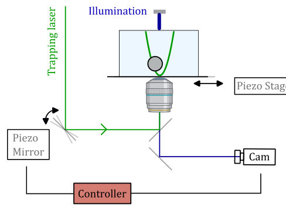
<figcaption class="paper-figure-caption"><b>Fig 4.</b> Figure 4. Schematic of the experimental optical-tweezer setup. A silica colloid is confined in an optical trap generated by a focused trapping laser. The trap position is controlled by a piezo-actuated steering mirror, while the particle position is recorded by video microscopy. The measured particle posi- tion, current trap position, and protocol time are passed to a real-time controller, which computes the next trap displace- ment. External perturbations can be applied by translating the sample with a piezo stage.</figcaption>
</figure>
</div>

<p><strong>Summary.</strong> The authors experimentally demonstrate using reinforcement learning (RL) that feedback control can extract usable work from thermal baths in colloidal systems. They show this occurs via specific 'backward' trap movements, which is confirmed by comparing RL results against exact theoretical solutions derived from stochastic control theory. The methodology is robust enough to handle complex, externally forced environments.</p>
<p><strong>Why it may be interesting.</strong> This work provides a powerful demonstration of how machine learning can solve complex optimal control problems in physical systems, offering insights into non-equilibrium thermodynamics and fluctuation-driven energy harvesting that are highly relevant to open quantum systems research.</p>
<details>
<summary>Detailed structure</summary>
<p><strong>Main problem.</strong> The research investigates how optimal closed-loop feedback control can minimize energetic costs when steering a physical system toward a target state in the presence of thermal fluctuations.</p>
<p><strong>Main result.</strong> Optimal policies identified via Reinforcement Learning (RL) quantitatively match analytical solutions, demonstrating that work extraction ($\langle W 
angle < 0$) occurs by exploiting backward trap displacements, even extending to heterogeneous non-equilibrium environments.</p>
<p><strong>Method.</strong> The study combines experimental realization using real-time optical tweezers and in situ RL (PPO) with rigorous theoretical analysis derived from stochastic control theory (LQG formulation).</p>
<p><strong>Model / system.</strong> The system is an overdamped colloidal particle suspended in a water–glycerol mixture, controlled by time-varying optical traps. The dynamics are governed by stochastic processes influenced by thermal noise.</p>
<p><strong>Key observables.</strong> Average work ($\langle W 
angle$) as a function of protocol duration ($t_f$), and the classification of feedback actions into quadrants based on trap displacement ($\Delta\lambda$) versus work increment ($\Delta W$).</p>
<p><strong>Important parameters / regimes.</strong> Trap stiffness ($\kappa = 2 \pm 0.2 	ext{ pN}/\mu	ext{m}$), viscous relaxation time ($ au_r \approx 25     ext{ ms}$), and the protocol duration ($t_f$) which dictates the crossover regime.</p>
<p><strong>Assumptions / limitations.</strong> The primary assumption is that RL can successfully learn optimal policies without requiring a detailed dynamical model, although theoretical benchmarks are used for comparison.</p>
<p><strong>Figures summary.</strong> Figures illustrate $\langle W 
angle$ vs $t_f$, showing work extraction at long times; action distributions classify feedback into quadrants (Q1-Q4); and later figures map out these quadrant probabilities in both equilibrium and non-equilibrium settings.</p>
<p><strong>Paper structure.</strong> The paper first establishes the experimental setup and RL methodology for optimal control. It then analyzes the crossover of work cost with protocol time, identifying backward motion as key to energy extraction. Finally, it extends this analysis to heterogeneous external forcing fields, confirming the robustness of the feedback strategy.</p>
</details>
<details>
<summary>Abstract</summary>
<p>We experimentally realize finite-time feedback control in an overdamped colloidal system using real-time optical tweezers with in situ reinforcement learning (RL). By varying the protocol duration tf for displacing the optical trap between prescribed positions, the optimal strategies identified by RL reveal a crossover from deterministic dragging toward the target to feedback-assisted exploitation of thermal fluctuations, reducing and eventually overcoming the energetic cost. The resulting policies agree quantitatively with the exact optimal closed-loop solution. By extending the approach to spatially localized external forcing, we further show that RL can identify optimal feedback strategies in heterogeneous stochastic environments where direct analytical control design is challenging.</p>
</details>
<p><sub><a href="#top">↑ back to top</a></sub></p>

<p><a id="paper-2606.17909"></a></p>
<h3 id="a-lindbladian-for-holographic-brownian-motion"><a href="http://arxiv.org/abs/2606.17909v1">A Lindbladian for holographic Brownian motion</a></h3>
<p><strong>Authors:</strong> Daichi Takeda<br>
<strong>Type:</strong> theory · <strong>Category:</strong> statistical mechanics · <strong>PDF:</strong> <a href="https://arxiv.org/pdf/2606.17909v1">https://arxiv.org/pdf/2606.17909v1</a><br>
<strong>Analysis basis:</strong> full PDF text, analyzed in chunks
<strong>Topic relevance:</strong> 🔥 <code>Keldysh / 2PI / non-Gaussian methods</code> <strong>4/5</strong> · <code>correlated / nonlocal dissipation</code> <strong>3/5</strong> · <code>driven-dissipative phase transition</code> <strong>3/5</strong> · <code>methods for driven-dissipative</code> <strong>3/5</strong> · <code>non-equilibrium dynamics</code> <strong>3/5</strong> · <code>non-equilibrium universality</code> <strong>2/5</strong> · <code>Kondo &amp; dissipative impurity</code> <strong>1/5</strong> · <code>scars &amp; prethermalization</code> <strong>1/5</strong></p>
<div class="figure-strip-hint">↔ Scroll figures horizontally</div>
<div class="paper-figures-scroll">
<figure class="paper-figure-card">
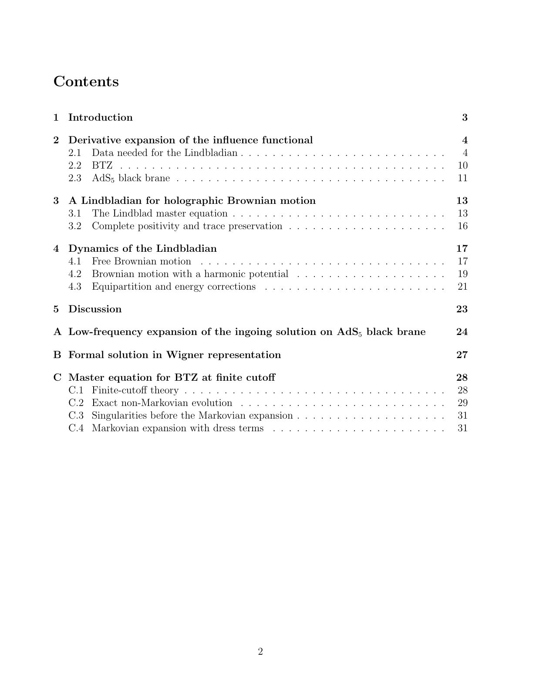
<figcaption class="paper-figure-caption"><b>Fig 1.</b> Low-resolution page preview, page 2</figcaption>
</figure>
<figure class="paper-figure-card">
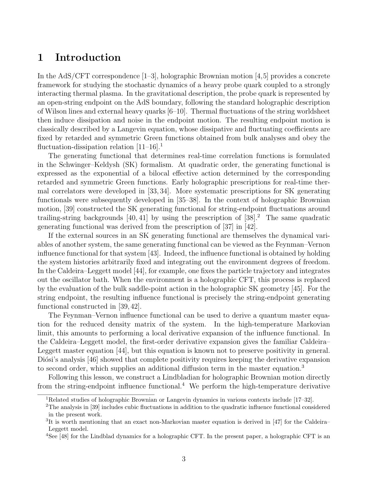
<figcaption class="paper-figure-caption"><b>Fig 2.</b> Low-resolution page preview, page 3</figcaption>
</figure>
<figure class="paper-figure-card">
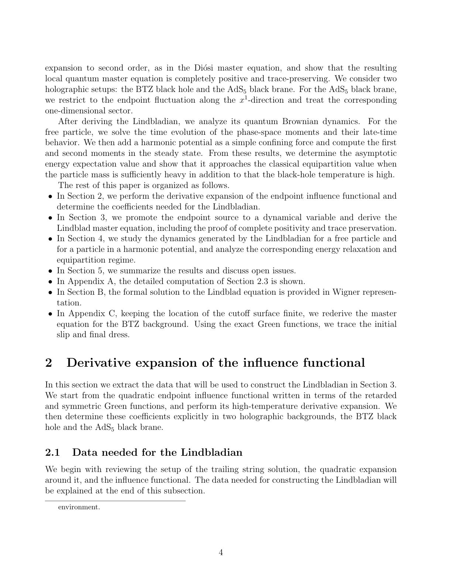
<figcaption class="paper-figure-caption"><b>Fig 3.</b> Low-resolution page preview, page 4</figcaption>
</figure>
<figure class="paper-figure-card">
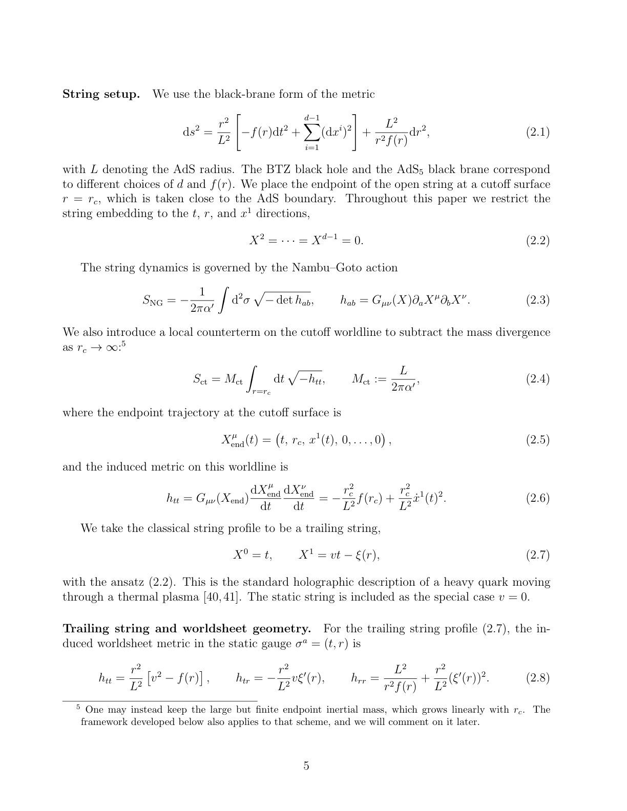
<figcaption class="paper-figure-caption"><b>Fig 4.</b> Low-resolution page preview, page 5</figcaption>
</figure>
<figure class="paper-figure-card">
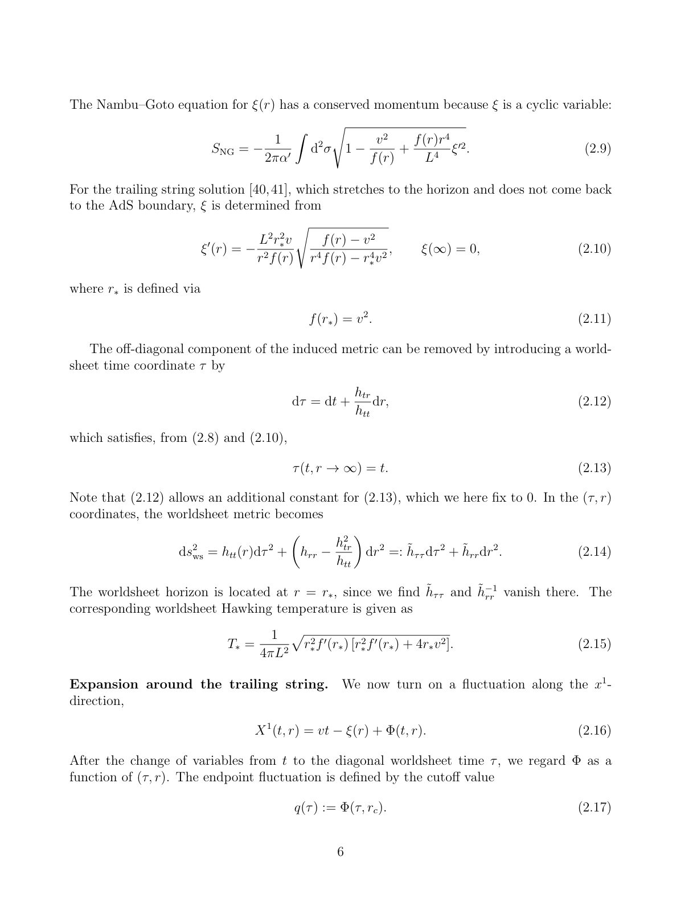
<figcaption class="paper-figure-caption"><b>Fig 5.</b> Low-resolution page preview, page 6</figcaption>
</figure>
</div>

<p><strong>Summary.</strong> This paper develops a rigorous Lindblad master equation describing holographic Brownian motion, which models heavy particle diffusion in a hot plasma using the AdS/CFT correspondence. By expanding the string endpoint influence functional and taking the Markovian limit, the authors derive dissipation coefficients for specific black hole backgrounds. The results confirm that the system thermalizes correctly, satisfying equipartition laws.</p>
<p><strong>Why it may be interesting.</strong> This work provides a concrete realization of open quantum system dynamics (Lindbladian evolution) derived from fundamental gravitational/string theory principles (AdS/CFT), offering tools to study thermalization in strongly coupled systems relevant to condensed matter physics.</p>
<details>
<summary>Detailed structure</summary>
<p><strong>Main problem.</strong> The paper derives a Lindbladian description for holographic Brownian motion, modeling the stochastic dynamics of a heavy probe quark coupled to a thermal plasma.</p>
<p><strong>Main result.</strong> It successfully constructs a completely positive and trace-preserving quantum master equation describing the system's time evolution in the Markovian limit. The analysis confirms energy relaxation approaches classical equipartition values under appropriate conditions.</p>
<p><strong>Method.</strong> The methodology involves deriving an influence functional from the Nambu–Goto action, applying the Schwinger–Keldysh formalism, and taking a high-temperature local Markovian expansion to yield the Lindblad generator.</p>
<p><strong>Model / system.</strong> The system is holographic Brownian motion, modeled by an open string endpoint fluctuation in AdS space coupled to a thermal bath. The dynamics are captured by a master equation involving dissipation coefficients derived from Green's functions for specific backgrounds like BTZ and AdS$_5$.</p>
<p><strong>Key observables.</strong> Phase-space moments ($\langle q 
angle, \langle p 
angle$), energy relaxation rates, and the stationary covariance matrix $\Sigma(	au)$.</p>
<p><strong>Important parameters / regimes.</strong> High temperature regime ($T^*$), heavy mass limit ($M_q$), and specific background parameters (BTZ/AdS$_5$).</p>
<p><strong>Assumptions / limitations.</strong> The derivation relies on the high-temperature Markovian limit, a local derivative expansion of the influence functional, and quadratic approximations of the underlying actions.</p>
<p><strong>Figures summary.</strong> Not specified in the notes; however, the analysis involves deriving coefficients (Table 3.1) and solving differential equations for covariance matrix components ($\Sigma(	au)$).</p>
<p><strong>Paper structure.</strong> The paper progresses from defining the physical problem via the influence functional to performing the mathematical expansion using Green's functions, culminating in the explicit form of the Lindblad master equation and analyzing its solutions for free and harmonic potentials.</p>
</details>
<details>
<summary>Abstract</summary>
<p>We derive a Lindbladian description of holographic Brownian motion in the high-temperature regime. Starting from the influence functional for a trailing string endpoint, we identify the corresponding quantum master equation and prove that it is completely positive and trace-preserving. We determine the coefficients of the Lindbladian explicitly for two holographic backgrounds: the BTZ black hole and the AdS$_5$ black brane, restricting in the latter case to the endpoint fluctuation along the $x^1$-direction. We then analyze the time evolution of phase-space moments, energy relaxation, and steady states.</p>
</details>
<p><sub><a href="#top">↑ back to top</a></sub></p>

<p><a id="paper-2606.17177"></a></p>
<h3 id="hybrid-ferromagnet-snspds-single-photon-induced-order-to-disorder-transition-in-ferromagnets-coupled-to-thin-film-superconductors"><a href="http://arxiv.org/abs/2606.17177v1">Hybrid Ferromagnet-SNSPDs: Single photon induced order-to-disorder transition in ferromagnets coupled to thin film superconductors</a></h3>
<p><strong>Authors:</strong> Leif Bauer, Daien He, Sathwik Bharadwaj, Zubin Jacob<br>
<strong>Type:</strong> theory · <strong>Category:</strong> statistical mechanics · <strong>PDF:</strong> <a href="https://arxiv.org/pdf/2606.17177v1">https://arxiv.org/pdf/2606.17177v1</a><br>
<strong>Analysis basis:</strong> full PDF text, analyzed in chunks
<strong>Topic relevance:</strong> 🔥 <code>spintronics-quantum-optics interface</code> <strong>4/5</strong> · <code>driven-dissipative phase transition</code> <strong>3/5</strong> · <code>exotic spin models in light-matter</code> <strong>3/5</strong> · <code>methods for driven-dissipative</code> <strong>2/5</strong> · <code>non-equilibrium dynamics</code> <strong>2/5</strong> · <code>non-equilibrium universality</code> <strong>2/5</strong> · <code>Frenkel-Kontorova</code> <strong>1/5</strong> · <code>Keldysh / 2PI / non-Gaussian methods</code> <strong>1/5</strong> · <code>correlated / nonlocal dissipation</code> <strong>1/5</strong></p>
<div class="figure-strip-hint">↔ Scroll figures horizontally</div>
<div class="paper-figures-scroll">
<figure class="paper-figure-card">
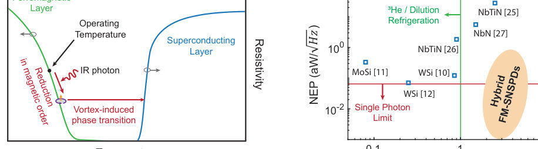
<figcaption class="paper-figure-caption"><b>Fig 1.</b> FIG. 1. Hybrid phase transition in a ferromagnet/superconductor (FM-S) bilayer. (a) When no photons are incident the vortex crossing barrier is large reducing dark counts. This large barrier is due to the presence of a magnetic layer with magnetization (yellow arrows) aligned to the vortex magnetic flux (yellow arrow). (b) When a single photon is incident, the vortex barrier is reduced enabling high photon detection efficiency. The barrier is reduced after photon incidence due to a reduction in the local order of the magnetic layer from the photon-induced hot spot. This reduced ferromagnetic order, causes a reduction in the magnetic field in the superconducting layer, leading to a reduced...</figcaption>
</figure>
<figure class="paper-figure-card">
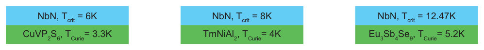
<figcaption class="paper-figure-caption"><b>Fig 2.</b> FIG. 2. Potential hybrid FM-SNSPD designs for LWIR, MWIR, visible-SWIR, and high temperature operations where T is the operating temperature, Tcrit is the proximity effect reduced superconducting critical temperature and TCurie is the ferromagnet Curie temperature [32–36].</figcaption>
</figure>
<figure class="paper-figure-card">
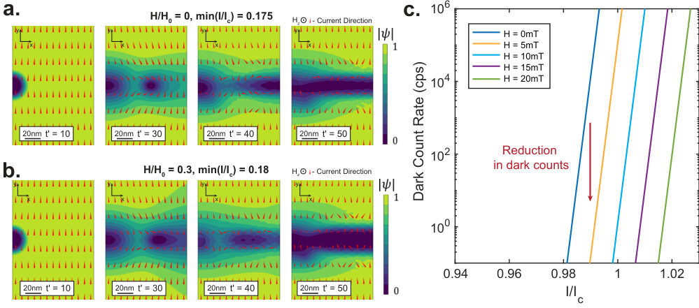
<figcaption class="paper-figure-caption"><b>Fig 3.</b> FIG. 3. Dark count behavior of SNSPDs and FM-SNSPDs. (a-b) Time dependent Ginzburg-Landau simulation of vortex crossing behavior for different bias currents and magnetic fields. Large positive magnetic fields are observed to require higher bias currents for single vortex crossing. (a) Vortex crossing-induced transition occurs at I/Ic = 0.175 for H/H0 = 0 in an NbN SNSPD. (b) Vortex crossing-induced transition occurs at I/Ic = 0.18 for H/H0 = 0.3 in an NbN SNSPD. (c) Dark count simulation from vortex crossing model demonstrating reduction in dark count rate as applied magnetic field increases. Note that relatively small increases in magnetic field can lead to significant reductions in dark...</figcaption>
</figure>
<figure class="paper-figure-card">
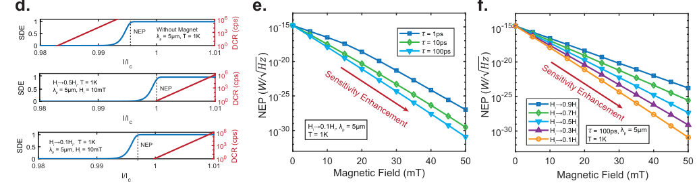
<figcaption class="paper-figure-caption"><b>Fig 4.</b> FIG. 4. Effect of time-varying ferromagnet temperature on SNSPD sensitivity. (a) An incident IR photon causes a change in the ferromagnet temperature which exponentially returns to the environment temperature with thermalization time τ. (b) Change in magnetic field for different reductions in magnetization and thermalization times. (c) Effect of different time-varying magnetic fields on the energy barrier. Note that larger thermal time constants lead to nearly constant changes in barrier. (d) Comparison of SDE and DCR for standard SNSPD (top) and FM-SNSPD with different reductions in magnetic field (middle, bottom). NEP is taken at the SDE plateau (I/Ic where SDE = 0.99). The magnetic field...</figcaption>
</figure>
<figure class="paper-figure-card">
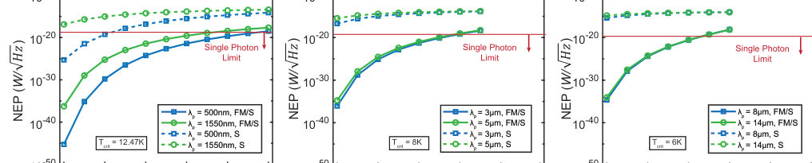
<figcaption class="paper-figure-caption"><b>Fig 5.</b> FIG. 5. Impact of ferromagnet/superconductor bilayers on infrared NEP. (a-c) Solid lines indicate hybrid FM-SNSPDs, while dashed lines indicate the same device designs without a magnetic layer. The hybrid FM-SNSPDs utilize a ferromagnet with Hi = 40mT, Hi →0.05Hi, τ = 100ps. NEP below the marked single photon limit indicates SNR &gt; 1 for incident photon flux of 1 photon/s at 1Hz readout bandwidth. (a) NEP versus temperature for visible to SWIR wavelengths demonstrating ∼4.25K operation for hybrid FM-SNSPDs. (b) NEP versus temperature for MWIR wavelengths demonstrating ∼3.75K operation for hybrid FM-SNSPDs. (c) NEP versus temperature for LWIR wavelengths demonstrating ∼3.25K operation for...</figcaption>
</figure>
</div>

<p><strong>Summary.</strong> The paper proposes using a hybrid Ferromagnet/Superconductor structure to create highly sensitive single-photon detectors that operate at significantly higher temperatures than previously possible. By engineering the magnetic coupling such that an incident photon triggers a controlled phase transition in the ferromagnet, the superconducting detection mechanism is activated efficiently while minimizing dark noise. This breakthrough promises simpler and more practical quantum sensing applications.</p>
<p><strong>Why it may be interesting.</strong> This work models a non-equilibrium phase transition driven by external stimuli (photons) in a coupled magnet-superconductor system, which has strong parallels with studying energy dissipation and thermalization dynamics in quantum materials.</p>
<details>
<summary>Detailed structure</summary>
<p><strong>Main problem.</strong> The primary goal is to develop infrared single-photon detectors that operate at significantly higher temperatures than current cryogenic limits (T &lt; 1K) by engineering the operating mechanism.</p>
<p><strong>Main result.</strong> A hybrid Ferromagnet/Superconductor bilayer can achieve high sensitivity up to 3.25–3.75K by coupling a photon-induced order-to-disorder transition in the ferromagnet to a superconducting phase transition.</p>
<p><strong>Method.</strong> The analysis uses vortex-crossing theory, time-dependent Ginzburg-Landau simulations, and atomistic spin dynamics to model the coupled magnetic and superconducting transitions.</p>
<p><strong>Model / system.</strong> The system is a hybrid Ferromagnet/Superconductor (FM/S) bilayer. The mechanism relies on the local heating from an incident photon causing disordering in the FM layer, which modifies the magnetic field profile and lowers the vortex crossing barrier in the superconductor.</p>
<p><strong>Key observables.</strong> Noise Equivalent Power (NEP), Dark Count Rate (DCR), System Detection Efficiency (SDE), and operating temperature ($T_{op}$).</p>
<p><strong>Important parameters / regimes.</strong> Operating Temperature (3.25–3.75K), Curie Temperature ($T_{	ext{Curie}}$) of the FM layer, magnetic field strength ($\sim 40	ext{mT}$), and thermal time constant ($  au$).</p>
<p><strong>Assumptions / limitations.</strong> The model assumes that the single-photon event triggers a localized hotspot leading to an order-to-disorder transition in the ferromagnet, which then drives the superconducting detection mechanism.</p>
<p><strong>Figures summary.</strong> Figures illustrate the operational cycle (no photon vs. photon incidence), show the dependence of DCR and NEP on applied magnetic fields and thermal time constants, and map out potential device designs based on critical temperatures ($T_{	ext{crit}}$, $T_{	ext{Curie}}$).</p>
<p><strong>Paper structure.</strong> The paper progresses by first establishing the limitations of current detectors, then proposing the hybrid FM/S structure. It details the underlying physics using vortex-crossing theory and simulations to show how magnetic field engineering allows for higher temperature operation while maintaining high sensitivity.</p>
</details>
<details>
<summary>Abstract</summary>
<p>The development of midwave and longwave infrared single photon detectors is crucial for their emerging applications in spectroscopy, remote sensing, exoplanet detection, and free space quantum communications. However, existing sensors need to be operated at extremely low temperatures (0.08-0.9K) to reduce dark noise and hence require the use of advanced cryogenics such as dilution refrigerators or $^3$He cryogens, significantly limiting applications. Here we propose a vortex-engineering approach based on a hybrid phase transition in a ferromagnet/superconductor bilayer to increase the operating temperature of infrared single photon detectors up to 3.75K. We show that the introduction of a ferromagnetic layer produces a local magnetic field which impedes vortex crossing in the superconductor, reducing dark noise. When a single photon is incident, the photon-induced hotspot causes an order-to-disorder transition in the ferromagnet, leading to a vortex-induced phase transition in the superconducting layer. By engineering the ferromagnet's Curie temperature to be close to the device's operating temperature, single photon sensitivity can be achieved at increased operating temperatures. We predict at midwave/longwave infrared wavelengths (3-14$μ$m) the operating temperature can be raised to 3.25-3.75K, enabling significantly simpler cooling systems.</p>
</details>
<p><sub><a href="#top">↑ back to top</a></sub></p>

<p><a id="paper-2606.17975"></a></p>
<h3 id="manipulation-of-topological-corner-states-via-subchiral-symmetry"><a href="http://arxiv.org/abs/2606.17975v1">Manipulation of Topological Corner States via Subchiral Symmetry</a></h3>
<p><strong>Authors:</strong> Hai-Tao Ding, Tianqi Chen, Leong-Chuan Kwek, Jiangbin Gong<br>
<strong>Type:</strong> both · <strong>Category:</strong> other · <strong>PDF:</strong> <a href="https://arxiv.org/pdf/2606.17975v1">https://arxiv.org/pdf/2606.17975v1</a><br>
<strong>Analysis basis:</strong> full PDF text, analyzed in chunks
<strong>Topic relevance:</strong> 🔥 <code>analog quantum simulation</code> <strong>4/5</strong> · <code>methods for driven-dissipative</code> <strong>3/5</strong> · <code>non-equilibrium dynamics</code> <strong>3/5</strong> · <code>QC/QI experiment</code> <strong>2/5</strong> · <code>driven-dissipative phase transition</code> <strong>2/5</strong> · <code>correlated / nonlocal dissipation</code> <strong>1/5</strong> · <code>entanglement &amp; information structure</code> <strong>1/5</strong> · <code>exotic spin models in light-matter</code> <strong>1/5</strong> · <code>non-equilibrium universality</code> <strong>1/5</strong></p>
<div class="figure-strip-hint">↔ Scroll figures horizontally</div>
<div class="paper-figures-scroll">
<figure class="paper-figure-card">
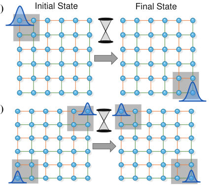
<figcaption class="paper-figure-caption"><b>Fig 1.</b> FIG. 1. Subchiral-symmetry-controlled manipulation of cor- ner modes in an extended 2D BBH model. (a) Lattice ge- ometry and hopping configuration. The unit cell contains four orbitals, labeled A, B, C, and D. The conventional BBH hoppings are denoted by ±γ and λ, while the red links rep- resent controllable hoppings between identical orbitals in ad- jacent unit cells along the x direction, denoted by tp. These hoppings selectively break the corresponding subchiral sym- metries. (b1) Adiabatic transfer of a single isolated corner mode. (b2) Adiabatic transfer of an equal-weight superposi- tion of two corner modes between opposite-corner pairs. Blue envelopes denote the corner-state...</figcaption>
</figure>
<figure class="paper-figure-card">
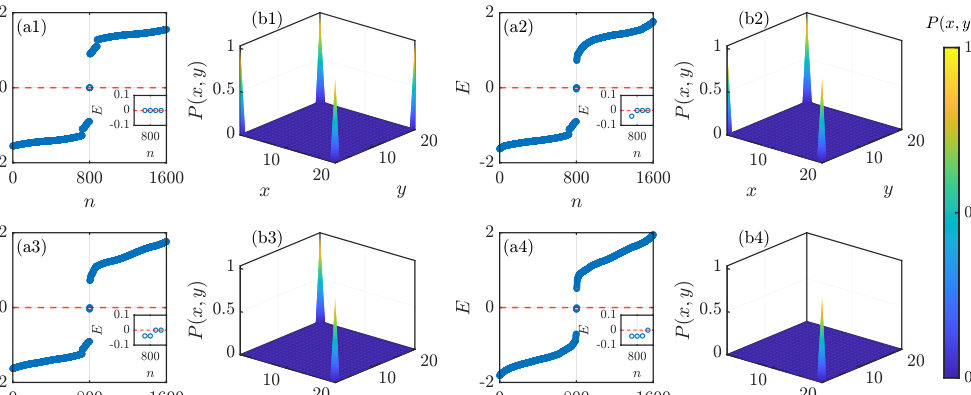
<figcaption class="paper-figure-caption"><b>Fig 2.</b> FIG. 2. (a1-a4) The energy spectrum and (b1-b4) the spatial distributions P(x, y) for the zero-energy corner states. Here (x, y) denotes the unit-cell position, and P(x, y) is the unit-cell-resolved probability density obtained by summing the wave-function weight over the four sublattices A, B, C, and D. The insets of (a1-a4) shows a zoom-in of the spectrum around E = 0. (a1) The energy spectrum of H in Eq. (1), showing four degenerate zero-energy corner states isolated within the bulk and edge gaps. (b1) The corresponding distribution P(x, y), showing localization at the four corners. (a2)–(a4) Energy spectra for H + HA, H + HA + HB, and H + HA + HB + HC, respectively, where the zero-mode...</figcaption>
</figure>
<figure class="paper-figure-card">
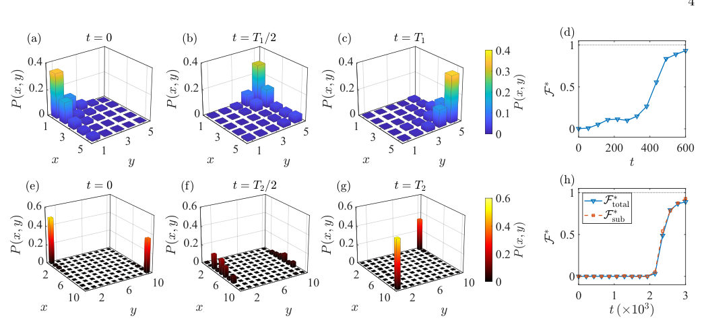
<figcaption class="paper-figure-caption"><b>Fig 3.</b> FIG. 3. Transfer of corner states on the IBM quantum processor ibm boston (hardware details in the Supplementary Mate- rials [68]). (a)–(d) Single corner mode; (e)–(h) superposition of corner modes. (a) and (e) Measured density distributions of the initial states at t = 0 for the single-mode and superposition protocols, respectively. (b) and (f) Density distribution of the instantaneous state at t = T1/2 and t = T2/2, respectively. (c) and (g) Density distribution of the final state at t = T1 and t = T2, respectively. (d) Transformed fidelity F ∗for the single-mode transfer and (h) transformed total fidelity F ∗ total and subspace fidelity F ∗ sub for the superposition transfer, all...</figcaption>
</figure>
</div>

<p><strong>Summary.</strong> The paper introduces subchiral symmetry as a general control principle for manipulating the corner modes found in higher-order topological insulators using the 2D BBH model. By selectively breaking these symmetries, researchers can isolate individual zero-energy states and execute adiabatic protocols to coherently transfer both single modes and superpositions of two modes. This capability was successfully demonstrated on an IBM quantum processor, establishing a pathway for programmable topological state control.</p>
<p><strong>Why it may be interesting.</strong> This work directly addresses programmable topological dynamics by linking symmetry protection (subchiral symmetry) to physical state manipulation, which is highly relevant for designing robust quantum simulators or quantum memory elements based on topological materials.</p>
<details>
<summary>Detailed structure</summary>
<p><strong>Main problem.</strong> The core problem is developing a general, controllable principle for manipulating topological corner modes (zero-energy states) in higher-order topological insulators (SOTIs). This requires selectively creating, isolating, and coherently transferring these degenerate modes.</p>
<p><strong>Main result.</strong> Subchiral symmetry was established as the control mechanism, allowing for the stepwise reduction of fourfold zero-mode manifolds to single isolated modes. Furthermore, adiabatic protocols successfully transferred both single modes and coherent superpositions of two modes with high fidelity on quantum hardware.</p>
<p><strong>Method.</strong> The work combines theoretical analysis using symmetry protection (subchiral symmetry) with experimental validation via time-dependent Hamiltonian engineering and implementation on an IBM quantum processor.</p>
<p><strong>Model / system.</strong> The primary model is the two-dimensional Benalcazar–Bernevig–Hughes (BBH) model, a paradigmatic SOTI. The control is achieved by selectively breaking the four associated subchiral symmetries using controlled intercell hoppings in the Hamiltonian.</p>
<p><strong>Key observables.</strong> Zero-energy corner states, single/superposition state transfer fidelity ($F^*$), and density distributions $P(x, y)$ showing mode localization.</p>
<p><strong>Important parameters / regimes.</strong> The control strength of the subchiral symmetry breaking terms ($H_\alpha$) and the adiabatic evolution time scale ($T$).</p>
<p><strong>Assumptions / limitations.</strong> The ability to realize and maintain phase coherence during state transfer protocols on physical quantum hardware (IBM processor).</p>
<p><strong>Figures summary.</strong> Figures detail the energy spectrum showing stepwise lifting of zero modes using symmetry breaking, and density plots/fidelity curves demonstrating successful single-mode and superposition state transfer between corners.</p>
<p><strong>Paper structure.</strong> The paper proceeds by first introducing the BBH model and its fourfold degenerate corner states. It then details how subchiral symmetries provide a control principle for sequentially isolating these modes. Finally, it presents adiabatic protocols to coherently transfer both single and two-state superpositions of these modes, validated numerically and on quantum hardware.</p>
</details>
<details>
<summary>Abstract</summary>
<p>Higher-order topological phases provide robust corner modes, but their use requires controllable creation, isolation, and transfer of individual modes and their superpositions. Here we demonstrate, using the two-dimensional Benalcazar-Bernevig-Hughes model as an example, that subchiral symmetry provides a general control principle for manipulating topological corner modes. The conventional chiral symmetry decomposes into four subchiral symmetries, each associated with one zero-energy corner mode. By selectively breaking these subsymmetries with controlled intercell hoppings, we reduce the fourfold corner-state manifold step by step to single isolated modes. We further design adiabatic protocols that transfer either a single corner state or a superposition of two corner states between selected corners, while preserving the relative phase in the latter case. Both numerical simulations and IBM quantum-processor implementations show that the proposed protocols can be executed with high fidelity, establishing subchiral symmetry as a route to programmable higher-order topological state manipulation.</p>
</details>
<p><sub><a href="#top">↑ back to top</a></sub></p>

<p><a id="paper-2606.17140"></a></p>
<h3 id="projected-logical-ensembles-in-surface-codes-via-the-random-matrix-theory-of-quantum-dots"><a href="http://arxiv.org/abs/2606.17140v1">Projected logical ensembles in surface codes via the random-matrix theory of quantum dots</a></h3>
<p><strong>Authors:</strong> Mircea Bejan, Jan Behrends, Max McGinley, Benjamin Béri<br>
<strong>Type:</strong> theory · <strong>Category:</strong> quantum information and computing · <strong>PDF:</strong> <a href="https://arxiv.org/pdf/2606.17140v1">https://arxiv.org/pdf/2606.17140v1</a><br>
<strong>Analysis basis:</strong> full PDF text, analyzed in chunks
<strong>Topic relevance:</strong> 🔥 <code>quantum measurements</code> <strong>4/5</strong> · <code>measurement-induced transitions</code> <strong>3/5</strong> · <code>driven-dissipative phase transition</code> <strong>2/5</strong> · <code>non-equilibrium universality</code> <strong>2/5</strong> · <code>Keldysh / 2PI / non-Gaussian methods</code> <strong>1/5</strong> · <code>Kondo &amp; dissipative impurity</code> <strong>1/5</strong> · <code>analog quantum simulation</code> <strong>1/5</strong> · <code>correlated / nonlocal dissipation</code> <strong>1/5</strong> · <code>entanglement &amp; information structure</code> <strong>1/5</strong> · <code>methods for driven-dissipative</code> <strong>1/5</strong> · <code>non-equilibrium dynamics</code> <strong>1/5</strong></p>
<div class="figure-strip-hint">↔ Scroll figures horizontally</div>
<div class="paper-figures-scroll">
<figure class="paper-figure-card">
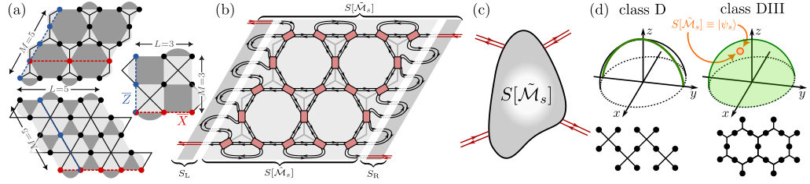
<figcaption class="paper-figure-caption"><b>Fig 1.</b> FIG. 1. Overview of results. (a): Surface code on honeycomb, square, and triangular lattices with qubits (black disks) on edges (black lines), SX v stabilizers (light gray) on vertices, and SZ f stabilizers (dark gray) on faces. The logical Z (blue) and X (red) are also shown. The medial lattice has qubits on its vertices and the faces form a checkerboard pattern of SX v and SZ f stabilizers. (b): The code subject to coherent X-rotations and syndrome measurements can be mapped to a quantum circuit (cf. Sec. IV), which further maps to a charge-conserving network model [32, 70] with scattering matrix S[ ˆ Ms] (light gray shaded). Concatenating S[ ˆ Ms] with scattering matrices SL and SR (dark...</figcaption>
</figure>
<figure class="paper-figure-card">
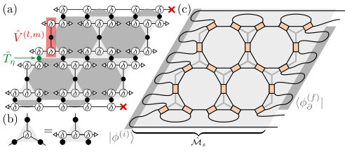
<figcaption class="paper-figure-caption"><b>Fig 2.</b> FIG. 2. (a): Mapping the sum over stabilizer configurations to a quantum circuit for the honeycomb surface code [8, 70]. Each SX v stabilizer is replaced by a Kronecker δ tensor that can be split up into several δ tensors (white disks), as shown in panel (b), to ensure a brickwork-structured quantum circuit. Combining the tensor ˆTη (black disks, one example highlighted in green) with neighboring δ tensors yields the nonunitary gate ˆV (l,m) (red box). The white triangles denote √</figcaption>
</figure>
<figure class="paper-figure-card">
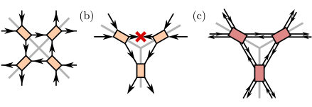
<figcaption class="paper-figure-caption"><b>Fig 3.</b> FIG. 4. (a): The gates ˆV (l,m) act unitarily along the edges of the SX v stabilizer lattice, which is indicated by the arrows that denote one of two possible choices for the direction of a unitary evolution. For lattices with only even-weight SX v , the lattice of ˆV (l,m) gates can be directly interpreted as a charge-conserving network model in symmetry class D, as shown in Ref. 70. (b): For lattices with odd-weight SX v , such a construction leads to a contradiction, as indicated by the red cross: incoming and outgoing modes cannot be connected. Following Ref. 32, we add a time-reversed copy to obtain a charge-conserving network in symmetry class DIII (see also Ref. [78]).</figcaption>
</figure>
<figure class="paper-figure-card">
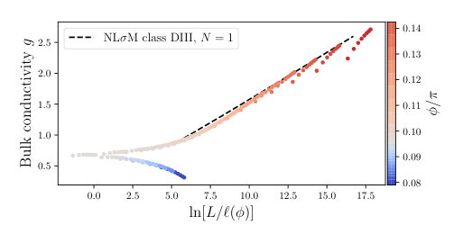
<figcaption class="paper-figure-caption"><b>Fig 4.</b> FIG. 6. Bulk conductivity g for the network model of the honeycomb surface code under coherent rotations. The system length and width are 21 ≤L = M ≤91 with data averaged over 105 to 106 syndrome realizations. Error bars (SE) are imperceptible. g scales with a ϕ-dependent length ℓ(ϕ). For the insulator ϕ &lt; ϕth, g(L/ℓ(ϕ)) decreases with L, with ϕth = (0.089 ± 0.002)π. For the metal ϕ &gt; ϕth, g increases and, for large L, is consistent with the scaling g ∝(2π)−1 ln[L/ℓ(ϕ)] of a nonlinear sigma model in class DIII in the replica limit N →1 (dashed black line), see also [77, 78].</figcaption>
</figure>
<figure class="paper-figure-card">
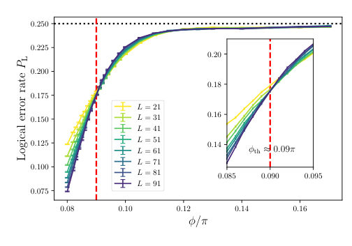
<figcaption class="paper-figure-caption"><b>Fig 5.</b> FIG. 5. Logical error rate PL vs coherent error angle ϕ for the honeycomb surface code with length L. PL decays with L below the error threshold ϕth (vertical dashed red line). The inset shows data closer to the QEC transition. For ϕ &gt; ϕth, PL initially increases with L, after which it becomes weakly dependent on L for the accessible system sizes. The horizontal dotted black line shows the minimum average infidelity for post-QEC states Haar-distributed over a Bloch hemisphere. Error bars show the standard error of the mean (SE). Data averaged over 105 to 106 syndromes.</figcaption>
</figure>
</div>

<p><strong>Summary.</strong> This work analyzes the randomness induced in quantum error correction codes (like the surface code) after syndrome measurements. It establishes that this resulting ensemble of logical states is mathematically equivalent to the scattering matrix statistics of a quantum dot. This connection allows researchers to use established tools from random matrix theory and mesoscopic physics to predict fundamental properties of fault-tolerant quantum computation.</p>
<p><strong>Why it may be interesting.</strong> It provides a powerful physical realization of abstract concepts in QEC by connecting them directly to well-understood physics models from condensed matter theory, specifically mesoscopic transport phenomena.</p>
<details>
<summary>Detailed structure</summary>
<p><strong>Main problem.</strong> The study characterizes the statistical properties of post-measurement logical states (the Projected Logical Ensemble, PLE) arising in Quantum Error Correction (QEC) on topological codes.</p>
<p><strong>Main result.</strong> The PLE is shown to be isomorphic to the scattering matrix ensemble of a quantum dot, establishing a fundamental link between QEC universality and mesoscopic physics.</p>
<p><strong>Method.</strong> The analysis maps the syndrome extraction process onto calculating the scattering matrix ($S$) of an effective quantum dot network derived from the surface code structure.</p>
<p><strong>Model / system.</strong> The system uses the Surface Code (SC) on 2D lattices, where measurement back-action generates randomness. This is mathematically mapped to a mesoscopic quantum dot whose transport properties are governed by Random Matrix Theory (RMT).</p>
<p><strong>Key observables.</strong> Projected Logical Ensemble (PLE), scattering matrices ($S$), bulk conductivity ($g$), and the Wasserstein-1 distance ($W_1$) used for comparison.</p>
<p><strong>Important parameters / regimes.</strong> The coherent rotation angle ($\phi$) determines the regime, with a critical threshold $\phi_{th}$ separating insulating/coherent regimes from metallic/chaotic ones.</p>
<p><strong>Assumptions / limitations.</strong> The analysis assumes maximum-likelihood decoding and relies on establishing an isomorphism between the quantum circuit evolution and the scattering matrix of the associated quantum dot.</p>
<p><strong>Figures summary.</strong> Figures illustrate the SC geometry, its mapping to a network model with $S$-matrices, and plots show the dependence of bulk conductivity ($g$) and logical error rate ($P_L$) on the rotation angle $\phi$, identifying critical thresholds.</p>
<p><strong>Paper structure.</strong> The paper develops by first defining the PLE via syndrome measurement (Chunk 1), establishing the isomorphism to quantum dot scattering matrices (Chunks 2 &amp; 4), analyzing constraints using tensor networks and symmetry classes (Chunks 3, 5), and finally quantifying the transition between regimes using RMT diagnostics like conductance scaling (Chunks 6 &amp; 7).</p>
</details>
<details>
<summary>Abstract</summary>
<p>Measurements underpin active quantum error correction (QEC) and have been recognized as a source of novel measurement-induced many-body phenomena. Here, we study the statistical properties of post-measurement logical states arising in QEC on topological codes subject to deterministic transversal unitary gates. Upon syndrome extraction followed by maximum-likelihood decoding, a Born-weighted ensemble arises which we dub the "projected logical ensemble" (PLE). Focusing on surface codes subject to uniform single-qubit Pauli-$X$ rotations, we characterize the measurement-induced randomness of the PLE. To this end, we show that for a code with a single logical qubit, the PLE is isomorphic to an ensemble of scattering matrices describing mesoscopic quantum dots obtained from a 2D Majorana network model with suitable boundary conditions. We uncover regimes where these quantum dots are chaotic such that their scattering matrices are well-described by random matrix theory. In these regimes, the PLE approaches a universal ensemble that is maximally random up to symmetry and decoder-induced constraints. The symmetry constraints, set by stabilizer and logical operator weights, realize Altland-Zirnbauer classes D or DIII, which we both illustrate. Our results establish a fundamental connection between emergent universality concepts in mesoscopic physics, quantum many-body systems, and QEC.</p>
</details>
<p><sub><a href="#top">↑ back to top</a></sub></p>

<p><a id="paper-2606.17625"></a></p>
<h3 id="imprints-of-dynamical-phases-in-semiclassical-entanglement-entropy-in-2d-cft"><a href="http://arxiv.org/abs/2606.17625v1">Imprints of dynamical phases in semiclassical entanglement entropy in 2D CFT</a></h3>
<p><strong>Authors:</strong> Parijat Dey, Semanti Dutta, Bobby Ezhuthachan<br>
<strong>Type:</strong> theory · <strong>Category:</strong> statistical mechanics · <strong>PDF:</strong> <a href="https://arxiv.org/pdf/2606.17625v1">https://arxiv.org/pdf/2606.17625v1</a><br>
<strong>Analysis basis:</strong> full PDF text, analyzed in chunks
<strong>Topic relevance:</strong> 🔥 <code>entanglement &amp; information structure</code> <strong>4/5</strong> · 🔥 <code>non-equilibrium dynamics</code> <strong>4/5</strong> · <code>non-equilibrium universality</code> <strong>3/5</strong> · <code>Keldysh / 2PI / non-Gaussian methods</code> <strong>2/5</strong> · <code>driven-dissipative phase transition</code> <strong>2/5</strong> · <code>methods for driven-dissipative</code> <strong>1/5</strong> · <code>scars &amp; prethermalization</code> <strong>1/5</strong></p>
<div class="figure-strip-hint">↔ Scroll figures horizontally</div>
<div class="paper-figures-scroll">
<figure class="paper-figure-card">
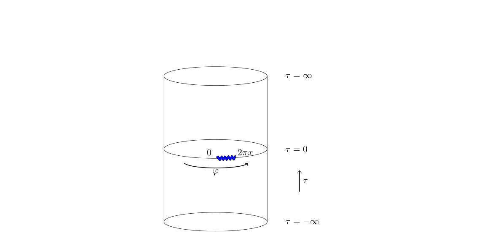
<figcaption class="paper-figure-caption"><b>Fig 1.</b> Figure 1: A CFT living on a cylinder labeled by the coordinates (τ, φ). The entangling region A, an interval of length [0, 2πx] on the spatial circle of the cylinder at τ = 0 is denoted by the blue cut.</figcaption>
</figure>
<figure class="paper-figure-card">
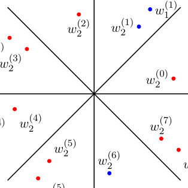
<figcaption class="paper-figure-caption"><b>Fig 2.</b> Figure 2: Sub-leading order correction to Sdyn in the short distance expansion and the uniformisation map for q = 8. The operators contracted on the same wedge are marked red and the four point function of operators on two different wedges are marked blue.</figcaption>
</figure>
<figure class="paper-figure-card">
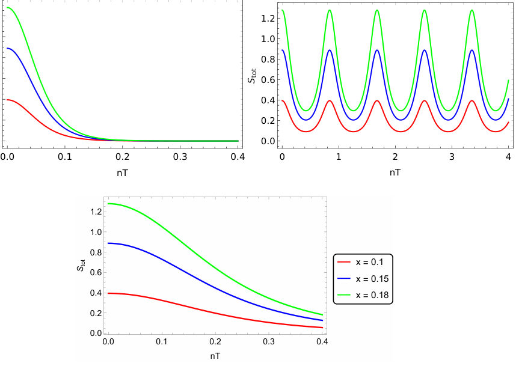
<figcaption class="paper-figure-caption"><b>Fig 3.</b> Figure 3: Leading order behavior of Stot = Suni + Sdyn for (2.28) in the small x limit, as a function of nT for h = 3, t = 0 and different values of the interval width x = 0.1, 0.15, 0.18. Here the origin of the interval is a = 0. Top left: Heating phase with α = 1.4 and β = 8. Top right: Non-heating phase with α = 8 and β = 1.4. Bottom: Phase boundary with α = 3.2.</figcaption>
</figure>
<figure class="paper-figure-card">

<figcaption class="paper-figure-caption"><b>Fig 4.</b> Figure 4: Leading order behavior of Stot = Suni + Sdyn for (2.28) in the small x limit, as a function of nT for h = 3, t = 0 and x = 0.1 in the entangling region (2.34). Left: Heating phase for α = 0.4, β = 0.6 has two peaks around a = 0.3 and a = 0.7 Right: Phase boundary for α = 1 has two peaks around a = 0.4 and a = 0.6.</figcaption>
</figure>
<figure class="paper-figure-card">

<figcaption class="paper-figure-caption"><b>Fig 5.</b> Figure 5: We show a constant time slice at time t of AdS3. γAt denotes the minimal length of subsystem At in the boundary. γAt splits the bulk into right(left) wedge denoted by ΣAt(Σ ¯ At). γAt consists of : Branch I, where slope φ′(r) &gt; 0 and Branch II with φ′(r) &lt; 0. Our excited state (3.10) breaks the angular symmetry, hence we need to evaluate the minimal area for these two branches separately. We have aligned the origin of the interval to the origin of the angular coordinate φ.</figcaption>
</figure>
</div>

<p><strong>Summary.</strong> This work analyzes the time evolution of entanglement entropy in a 2D CFT subjected to periodic driving, revealing distinct dynamical phases. By comparing these results with calculations on the holographic dual ($  ext{AdS}_3$), the authors provide strong evidence supporting the Faulkner-Lewkowycz-Maldacena conjecture for quantum corrections to entanglement entropy.</p>
<p><strong>Why it may be interesting.</strong> The connection between dynamical phases observed in quantum field theory dynamics (like those driven by Floquet Hamiltonians) and geometric properties derived from gravity (via the FLM conjecture) is highly relevant to understanding non-equilibrium quantum systems.</p>
<details>
<summary>Detailed structure</summary>
<p><strong>Main problem.</strong> The study investigates how semiclassical entanglement entropy (EE) evolves over time in driven quantum field theories, specifically looking for signatures of underlying dynamical phases.</p>
<p><strong>Main result.</strong> The computed bulk entanglement entropy successfully matches the CFT entanglement entropy at leading order, providing a non-trivial verification of the Faulkner-Lewkowycz-Maldacena (FLM) conjecture for first quantum corrections.</p>
<p><strong>Method.</strong> The authors employ both boundary CFT calculations using the replica method and holographic methods involving solving Einstein's equations to find backreacted geometries and calculating minimal areas.</p>
<p><strong>Model / system.</strong> The system is a 2D Conformal Field Theory (CFT) in $1+1$ dimensions, driven by $   ext{sl}(2,\mathbb{R})$ parameters. Its gravitational dual is Anti-de Sitter space ($    ext{AdS}_3$).</p>
<p><strong>Key observables.</strong> Entanglement Entropy (EE), the perturbed minimal area ($\delta A$), and the stress tensor expectation value ($\langle T_{\mu
u} 
angle$).</p>
<p><strong>Important parameters / regimes.</strong> Drive parameters ($\alpha, eta$), stroboscopic time ($nT$), and the gravitational coupling constant ($G_N$).</p>
<p><strong>Assumptions / limitations.</strong> The bulk computation is restricted to small backreaction and short distance approximations; calculations are performed up to specific orders in $c$ or $G_N$.</p>
<p><strong>Figures summary.</strong> Figures illustrate the CFT geometry on a cylinder, plot the total entanglement entropy ($  ext{S}_{    ext{tot}}$) versus time for different dynamical phases (Heating/Non-heating), and show cross-sections of the $  ext{AdS}_3$ bulk.</p>
<p><strong>Paper structure.</strong> The paper systematically derives the effective Hamiltonian governing the stroboscopic dynamics, calculates the EE in the CFT using replica methods across three distinct dynamic regimes, and then performs a detailed holographic calculation matching these results by solving Einstein's equations for metric perturbations.</p>
</details>
<details>
<summary>Abstract</summary>
<p>We study the time evolution of semiclassical entanglement entropy in a class of $sl(2,\mathbb{R})$ driven states in a large $c$ conformal field theory (CFT) in $1+1$ spacetime dimensions. Upon varying the parameters of the drive, we find that the entanglement entropy exhibits the signature of the dynamical phases of the driven CFT. We further study the holographic dual of this CFT where the excited states of a minimally coupled scalar in $AdS_3$ induce a backreaction that modifies the background geometry. We compute the back reacted geometry by solving Einstein's equation with the expectation value of the stress tensor in the coherent state as the source term. Subsequently, we calculate the time evolution of the perturbed minimal area and the bulk entanglement entropy at $O(G_N^0)$, up to the sub-leading order in short distance approximation. These results match the CFT entanglement entropy in the boundary at $O(c^0)$, and serve as a nontrivial check of the Faulkner-Lewkowycz-Maldacena (FLM) conjecture for the first quantum correction of holographic entanglement entropy. The details of the check has been provided in the accompanying ancillary notebook.</p>
</details>
<p><sub><a href="#top">↑ back to top</a></sub></p>

<p><a id="paper-2606.17729"></a></p>
<h3 id="dimension-free-approximate-tensorization-of-quantum-hypercontractivity-for-qudit-depolarizing-semigroups"><a href="http://arxiv.org/abs/2606.17729v1">Dimension-Free Approximate Tensorization of Quantum Hypercontractivity for Qudit Depolarizing Semigroups</a></h3>
<p><strong>Authors:</strong> Yangjing Dong, Li Gao, Fengning Ou, Penghui Yao, Haigang Zhou<br>
<strong>Type:</strong> theory · <strong>Category:</strong> quantum information and computing · <strong>PDF:</strong> <a href="https://arxiv.org/pdf/2606.17729v1">https://arxiv.org/pdf/2606.17729v1</a><br>
<strong>Analysis basis:</strong> full PDF text, analyzed in chunks
<strong>Topic relevance:</strong> 🔥 <code>entanglement &amp; information structure</code> <strong>4/5</strong> · <code>correlated / nonlocal dissipation</code> <strong>3/5</strong> · <code>methods for driven-dissipative</code> <strong>3/5</strong> · <code>driven-dissipative phase transition</code> <strong>2/5</strong> · <code>non-equilibrium dynamics</code> <strong>2/5</strong> · <code>analog quantum simulation</code> <strong>1/5</strong> · <code>non-equilibrium universality</code> <strong>1/5</strong></p>
<div class="figure-strip-hint">↔ Scroll figures horizontally</div>
<div class="paper-figures-scroll">
<figure class="paper-figure-card">

<figcaption class="paper-figure-caption"><b>Fig 1.</b> Figure 1. Proof roadmap for Theorem 3.1. The proof alternates between hypercontractive statements and logarithmic-Sobolev inequalities.</figcaption>
</figure>
</div>

<p><strong>Summary.</strong> The paper develops rigorous mathematical techniques to prove that certain properties of quantum evolution, specifically hypercontractivity and the Log-Sobolev constant, exhibit approximate tensorization when applied to product qudit systems. This dimension-independent result is crucial for understanding how local dynamics scale across large quantum registers.</p>
<p><strong>Why it may be interesting.</strong> This work provides powerful tools for analyzing quantum correlations across many sites in open quantum systems, directly impacting lower bounds on entanglement measures and information processing capacity.</p>
<details>
<summary>Detailed structure</summary>
<p><strong>Main problem.</strong> The primary goal is proving dimension-free approximate tensorization bounds for hypercontractivity and logarithmic-Sobolev constants in quantum Markov semigroups.</p>
<p><strong>Main result.</strong> The authors establish that the log-Sobolev constant of a product semigroup scales by at least a factor of 2/(3ln 2) times the single-site constant, independent of local dimension or spectral gap.</p>
<p><strong>Method.</strong> The proof combines establishing exact tensorization for integer hypercontractivity parameters using complex interpolation to extend results to all real values. It relies heavily on structural properties like the Positive Off-Diagonal Scaling (PODS) condition.</p>
<p><strong>Model / system.</strong> The study concerns reversible quantum Markov semigroups ($\Phi_t$) acting on qudits of arbitrary finite dimension $d$, specifically focusing on generalized depolarizing semigroups. The analysis uses tensor products of these processes, $\Phi^{\otimes n}_t$.</p>
<p><strong>Key observables.</strong> Logarithmic-Sobolev constant ($\alpha_2(L)$), hypercontractivity parameters ($p, q$), and the approximation factor $eta \approx 0.96$.</p>
<p><strong>Important parameters / regimes.</strong> The local dimension $d$ (the result is independent of it); the number of sites $n$; and the time parameter $t$.</p>
<p><strong>Assumptions / limitations.</strong> The semigroups must satisfy the Positive Off-Diagonal Scaling (PODS) property. The results are approximate ($eta < 1$) rather than exact tensorization.</p>
<p><strong>Figures summary.</strong> Figure 1 outlines a proof roadmap connecting hypercontractivity statements to Logarithmic-Sobolev Inequality applications for establishing the main theorem.</p>
<p><strong>Paper structure.</strong> The paper develops the theory by first proving specific hypercontractive inequalities (e.g., for $q=3$), then using complex interpolation to generalize these results, and finally applying these techniques to derive the dimension-independent tensorization bounds for $\alpha_2(L)$.</p>
</details>
<details>
<summary>Abstract</summary>
<p>We prove almost tensorization for hypercontractivity and logarithmic-Sobolev constants for a class of reversible quantum Markov semigroups satisfying the positive off-diagonal scaling (PODS) property. This class includes qubit examples and generalized depolarizing semigroups with respect to full-rank states in arbitrary finite dimensions. For any such semigroup $(Φ_t)_{t\ge 0}$ and every tensor power $n$, we show that the log-Sobolev constant of the product semigroup $Φ_t^{\otimes n}$ is at least $2/(3\ln 2)$, approximately 0.96, times the log-Sobolev constant of the single-site semigroup $Φ_t$, independently of $n$ and the local dimension $d$. The proof first establishes exact tensorization of the $(q,2)$-hypercontractive inequality for integer $q$, in particular $q=3$, and then extends the estimate to all real $q>2$ by complex interpolation; the standard implication from hypercontractivity to logarithmic-Sobolev inequalities yields the stated almost tensorization result. As an application of the same method, we also obtain sharp $(q,2)$-hypercontractivity estimates for qubit depolarizing channels.</p>
</details>
<p><sub><a href="#top">↑ back to top</a></sub></p>

<p><a id="paper-2606.17326"></a></p>
<h3 id="emergent-antiphase-stacking-in-a-transient-charge-density-wave"><a href="http://arxiv.org/abs/2606.17326v1">Emergent Antiphase Stacking in a Transient Charge Density Wave</a></h3>
<p><strong>Authors:</strong> Jade Stanton, Gal Orenstein, Ryan A. Duncan, Gilberto A. de la Peña Muñoz, Yijing Huang, Viktor Krapivin, Quynh Le Nguyen, Samuel Teitelbaum, Anisha G. Singh, Roman Mankowsky, Henrik Lemke, Mathias Sander, Yunpei Deng, Christopher Arrell, Ian R. Fisher, David A. Reis, Mariano Trigo<br>
<strong>Type:</strong> experiment · <strong>Category:</strong> strongly correlated electrons · <strong>PDF:</strong> <a href="https://arxiv.org/pdf/2606.17326v1">https://arxiv.org/pdf/2606.17326v1</a><br>
<strong>Analysis basis:</strong> full PDF text, analyzed in chunks
<strong>Topic relevance:</strong> 🔥 <code>non-equilibrium dynamics</code> <strong>4/5</strong> · 🔥 <code>non-equilibrium universality</code> <strong>4/5</strong> · <code>driven-dissipative phase transition</code> <strong>3/5</strong> · <code>methods for driven-dissipative</code> <strong>3/5</strong> · <code>Frenkel-Kontorova</code> <strong>1/5</strong> · <code>Keldysh / 2PI / non-Gaussian methods</code> <strong>1/5</strong></p>
<div class="figure-strip-hint">↔ Scroll figures horizontally</div>
<div class="paper-figures-scroll">
<figure class="paper-figure-card">

<figcaption class="paper-figure-caption"><b>Fig 1.</b> FIG. 1. (a) RTe3 crystal structure. Labels (Te-Te)1 and (Te- Te)2 denote inequivalent Te planes in the conventional unit cell. (b) Summary of the two CDW transition temperatures across the rare-earth series. Blue (purple) symbols show the c order (a order) transition temperature [7, 9]. Open circles are extrapolated [9, 10]. Pink stars represent the light-induced transient a CDW observed here and in Refs. [5, 6].</figcaption>
</figure>
<figure class="paper-figure-card">

<figcaption class="paper-figure-caption"><b>Fig 2.</b> FIG. 2. Intensity change ∆I(q, t) integrated over pump probe delays up to 4 ps around (a) (qa,tr, 2, 3) and (b) (qa,tr, 6, 3) in reciprocal space. The red arrows indicate directions in reciprocal space, where q1 ≈0.50a∗+0.87c∗, q2 ≈−0.03a∗+ 0.99b∗−0.16c∗, and q3 ≈0.47a∗+0.15b∗+0.87c∗. (c) Intensity Ioff(q, t) around the (2, 2, 1 −qc) equilibrium c order peak. (d,e) Intensity integrated over the (d) (qa,tr, 2, 3) transient and (e) (2, 2, 1−qc) equilibrium CDW peaks as the azimuthal angle ϕ is rotated along the sample normal. To capture the maximum intensity of the transient peak, the incident pump fluence was 8 mJ/cm2 and the time delay between the pump and the probe pulses was t = 5 ps.</figcaption>
</figure>
<figure class="paper-figure-card">

<figcaption class="paper-figure-caption"><b>Fig 3.</b> FIG. 3. (a) Relative integrated x-ray intensity as a function of pump-probe delay for the c (blue) and a (pink) CDWs shown in Figs. 2(a) and (c), respectively. Both traces are normalized by the equilibrium intensity. (b) Intensity change ∆I(q) of the (qa,tr, 3, 2) peak along the b direction for representative time points indicated by colored circles in (a). Traces are ver- tically offset for clarity. The black trace shows the intensity of the (2, 2, 1−qc) peak. (c) Center of mass (blue) and standard deviation (pink) of the intensity profiles in (b) as a function of time.</figcaption>
</figure>
<figure class="paper-figure-card">

<figcaption class="paper-figure-caption"><b>Fig 4.</b> FIG. 4. (a) Schematic showing the location of the different features in reciprocal space centered around (0, 2, 3). (b) Il- lustration of the relative phases of the (Te-Te)1 planes over time in the transient CDW state, compared to the equilib- rium a order. (i) At early times, the correlation length ξ is short in the stacking axis, and the phases of the (Te-Te)1 planes across primitive unit cells are random. (ii) At time t ≈1 ps, the correlation length has increased, so that neigh- boring (Te-Te)3 planes exhibit a 180◦phase offset relative to the equilibrium case (iii). Bottom plots show a schematic of the resulting behavior of a CDW peak along the k direction in each of these cases.</figcaption>
</figure>
</div>

<p><strong>Summary.</strong> The research uses ultrafast X-ray scattering at an XFEL facility to study transient Charge Density Waves (CDWs) in $   ext{LaTe}_3$ induced by light. They found that the photoexcited CDW state possesses a distinct wavevector and relative phase compared to the material's known equilibrium orders. This work provides direct, time-resolved evidence of novel electronic phases inaccessible under standard thermodynamic conditions.</p>
<p><strong>Why it may be interesting.</strong> This work demonstrates how non-equilibrium excitation can stabilize or reveal fundamentally different electronic ground states compared to those predicted by static theory, which is crucial for understanding strongly correlated materials dynamics.</p>
<details>
<summary>Detailed structure</summary>
<p><strong>Main problem.</strong> Investigating novel electronic states, specifically transient Charge Density Waves (CDWs), induced by photoexcitation that are inaccessible under equilibrium conditions.</p>
<p><strong>Main result.</strong> The transient CDW state exhibits a distinct ordering wavevector ($\mathbf{q}_{a,tr} \approx (2/7, 0, 0)$) compared to the equilibrium order ($\mathbf{q}_a \approx (5/7, 0, 0)$), suggesting a $\pi$ phase offset between adjacent planes.</p>
<p><strong>Method.</strong> Ultrafast x-ray scattering using an XFEL provides high momentum and time resolution to probe the dynamics of these transient phases.</p>
<p><strong>Model / system.</strong> The study focuses on rare-earth tritellurides ($    ext{RTe}_3$), which are known for exhibiting complex, competing charge ordering instabilities like CDWs.</p>
<p><strong>Key observables.</strong> CDW Bragg peak location in reciprocal space ($\mathbf{q}$), time evolution of intensity ($\Delta I(\mathbf{q}, t)$), and correlation length along different crystal directions.</p>
<p><strong>Important parameters / regimes.</strong> Ultrafast excitation pulse duration (e.g., 35 fs) and the characteristic wavevectors defining transient vs. equilibrium orders.</p>
<p><strong>Assumptions / limitations.</strong> The analysis assumes that x-ray scattering can microscopically resolve the structural differences between photoinduced and equilibrium phases.</p>
<p><strong>Figures summary.</strong> Figures illustrate the comparison of $\mathbf{q}$ vectors in reciprocal space, showing the distinct location of the transient peak relative to equilibrium peaks; time evolution plots track the narrowing/shifting of the transient peak profile over picoseconds.</p>
<p><strong>Paper structure.</strong> The paper establishes the background on photoinduced CDWs, presents the experimental methodology using XFEL scattering, details the observation that the transient state has a different wavevector and phase relationship than the equilibrium state, and concludes by highlighting the unique nature of this photoexcited phase.</p>
</details>
<details>
<summary>Abstract</summary>
<p>Photoexcitation can induce novel states in materials that are inaccessible in equilibrium, a recent example being the light-induced charge density wave (CDW) observed in $\text{LaTe}_3$. Here, we investigate this transient CDW using infrared-pump x-ray-probe scattering at a free-electron laser, with high momentum and time resolution. We find that the transient CDW Bragg peak is broad in reciprocal space, indicating a highly disordered state. The ordering wavevector of the transient state is different from the equilibrium orders that develop in this class of materials - the transient peak appears near (2/7, 0, 0) reciprocal lattice units, whereas the equilibrium $a$ order and $c$ order occur at $\approx (5/7, 0, 0)$ and $(0, 0, 2/7)$, respectively. The transient CDW is therefore distinct from the equilibrium $a$ order, differing in the relative phase of the CDW displacement between the two equivalent nearly-square Te-Te nets in the conventional unit cell. Our work highlights how photoexcitation can access states with no equilibrium analog, and how x-ray scattering can provide microscopic insight into such elusive phases.</p>
</details>
<p><sub><a href="#top">↑ back to top</a></sub></p>

<p><a id="paper-2606.17983"></a></p>
<h3 id="emergent-de-sitter-space-and-non-unitary-tensor-networks-from-non-hermitian-quantum-criticality"><a href="http://arxiv.org/abs/2606.17983v1">Emergent de Sitter Space and Non-Unitary Tensor Networks from Non-Hermitian Quantum Criticality</a></h3>
<p><strong>Authors:</strong> Kuang-Hung Chou, Po-Yao Chang<br>
<strong>Type:</strong> theory · <strong>Category:</strong> statistical mechanics · <strong>PDF:</strong> <a href="https://arxiv.org/pdf/2606.17983v1">https://arxiv.org/pdf/2606.17983v1</a><br>
<strong>Analysis basis:</strong> full PDF text, analyzed in chunks
<strong>Topic relevance:</strong> 🔥 <code>entanglement &amp; information structure</code> <strong>4/5</strong> · <code>driven-dissipative phase transition</code> <strong>3/5</strong> · <code>methods for driven-dissipative</code> <strong>3/5</strong> · <code>Kondo &amp; dissipative impurity</code> <strong>2/5</strong> · <code>non-equilibrium dynamics</code> <strong>2/5</strong> · <code>correlated / nonlocal dissipation</code> <strong>1/5</strong> · <code>non-equilibrium universality</code> <strong>1/5</strong></p>
<div class="figure-strip-hint">↔ Scroll figures horizontally</div>
<div class="paper-figures-scroll">
<figure class="paper-figure-card">

<figcaption class="paper-figure-caption"><b>Fig 1.</b> FIG. 1: Outward-running de Sitter geodesic. In contrast to the AdS case, the extremal curve moves away from the boundary interval and converges to the common endpoint in the infinite past.</figcaption>
</figure>
<figure class="paper-figure-card">

<figcaption class="paper-figure-caption"><b>Fig 2.</b> FIG. 2: Tensor-network representation of the dS/cMERA construction and the associated geodesic cut. The right and left UV states are placed on the conformal boundaries I±, while the RG flow terminates at an IR non-entangled non-Hermitian density matrix, shown in blue. Red triangles denote coarse-graining tensors and green boxes denote disentanglers. For a boundary subsystem A, shown by the orange segment, the green curve indicates the corresponding de Sitter geodesic, which connects the interval endpoints on the right and left boundary states.</figcaption>
</figure>
<figure class="paper-figure-card">

<figcaption class="paper-figure-caption"><b>Fig 3.</b> FIG. 3: Tensor-suppressed skeletons used for the bond-counting comparison. Circles denote effective sites at a given RG depth, horizontal links connect neighboring sites within the same layer, and diagonal links connect adjacent RG layers. The UV cutoff is a, and the dyadic coarse-graining factor is chosen as k = 2. [Left panel]: standard AdS/MERA skeleton with periodic boundary condition. The horizontal links carry cost L1, while the interlayer links carry cost L2. The boundary subsystem of size ℓA is shown in orange, and the green path denotes the discrete representative of the AdS geodesic. The inset shows the corresponding continuum profiles on a constant-time slice of AdS: γ1 is a...</figcaption>
</figure>
<figure class="paper-figure-card">

<figcaption class="paper-figure-caption"><b>Fig 4.</b> FIG. 4: Periodic-boundary-condition tensor-network construction in the de Sitter Penrose diagram and local A| ¯A assignment. Triangles denote coarse-graining tensors, square boxes denote entanglers, and blue diamonds denote the IR reference density-matrix sites. [Left panel]: global two-ended tensor-network representation in Penrose coordinates. The dashed red lines indicate the null horizons. [Right panel]: local enlargement of the region x ∈[−π/2, π/2], T ∈[−π/2, 0], using the same fraction of the boundary interval as the right panel of Fig. 3. In this panel, the A| ¯A assignment is indicated by the color of the coarse-graining tensors: yellow for A and red for ¯A. The shaded yellow...</figcaption>
</figure>
</div>

<p><strong>Summary.</strong> The paper develops a novel tensor-network approach to realize the holographic principle in de Sitter space, moving beyond the established Anti-de Sitter framework. By applying non-unitary continuous MERA to a critical fermion chain, the authors show that entanglement structure naturally encodes an emergent dS geometry. This establishes a bottom-up dictionary (dS/cMERA) by showing how extremal surfaces map onto zero-cost links in the tensor network skeleton.</p>
<p><strong>Why it may be interesting.</strong> This work provides a concrete, calculable mechanism (bond counting) to connect quantum information concepts (MERA) directly to fundamental aspects of quantum gravity (dS holography), which is highly relevant for theoretical physicists studying emergent spacetime structures from microscopic degrees of freedom.</p>
<details>
<summary>Detailed structure</summary>
<p><strong>Main problem.</strong> The primary challenge is extending the holographic principle, which relates boundary entanglement to bulk geometry (like AdS/CFT), to de Sitter (dS) spacetimes by developing a microscopic tensor-network framework.</p>
<p><strong>Main result.</strong> The authors establish a bottom-up dS/(c)MERA correspondence, demonstrating that non-unitary continuous MERA applied to a critical fermion chain yields an emergent de Sitter spacetime whose entanglement entropy scales correctly with the extremal surface length.</p>
<p><strong>Method.</strong> The work combines concepts from quantum information theory (MERA/tensor networks), condensed matter physics (non-Hermitian criticality), and general relativity (dS geodesics) by mapping continuum geometric quantities onto discrete bond-counting rules.</p>
<p><strong>Model / system.</strong> The model is a non-Hermitian critical fermion chain, analyzed using the continuous Multi-Scale Entanglement Renormalization Ansatz (cMERA). This system exhibits criticality that leads to an emergent Lorentzian de Sitter spacetime geometry in its holographic dual.</p>
<p><strong>Key observables.</strong> Non-unitary critical entanglement entropy ($S \propto i \ln l$), extremal Ryu-Takayanagi surfaces, and the resulting dS metric components.</p>
<p><strong>Important parameters / regimes.</strong> The non-Hermitian coupling parameters ($\mu$) defining criticality; the scale renormalization parameter $u$; and the geometric constants related to the de Sitter curvature ($\Lambda$).</p>
<p><strong>Assumptions / limitations.</strong> The framework assumes that a bottom-up tensor network description can capture the physics of dS holography, requiring the use of biorthogonal structures due to non-Hermiticity.</p>
<p><strong>Figures summary.</strong> Figures illustrate the embedding of the cMERA circuit into the de Sitter Penrose diagram and show how the extremal geodesic path corresponds to a specific zero-cost continuation (null link) within the tensor network structure.</p>
<p><strong>Paper structure.</strong> The paper progresses by first reviewing AdS/CFT holography via MERA, then generalizing this framework to non-Hermitian systems to address dS space. The core is establishing the continuum metric from entanglement flow and subsequently deriving the discrete bond-counting rules that reproduce the expected logarithmic scaling for the dS extremal surface.</p>
</details>
<details>
<summary>Abstract</summary>
<p>Extending the holographic principle to de Sitter (dS) spacetimes remains one of the most vital open frontiers in quantum gravity, where a microscopic, bottom-up tensor-network framework that relates boundary quantum data to emergent de Sitter spacetime is still lacking. In this work, we first show the emergence of de Sitter spacetime from boundary entanglement by formulating a non-unitary continuous multi-scale entanglement renormalization ansatz (cMERA) for a concrete non-Hermitian critical fermion chain. Within this emergent spacetime, we analyze the associated geodesics and show that they act as extremal Ryu-Takayanagi (RT) surfaces undergoing a smooth timelike-to-null transition. Remarkably, we demonstrate that this continuum trajectory dictates a distinct tensor-network architecture in which the bond-counting contribution naturally truncates at the discrete timelike-to-null transition toward the deep infrared. In the resulting architecture, the null ray along the horizon is represented by zero-cost links, since the associated cut severs no tensor legs. This network structure successfully reproduces the logarithmic scaling of non-unitary critical entanglement entropy, offering a bond-counting picture for the de Sitter RT formula. Our results provide the long-sought dS/(c)MERA correspondence at the level of both emergent spacetime and discrete holographic entanglement.</p>
</details>
<p><sub><a href="#top">↑ back to top</a></sub></p>

<p><a id="paper-2606.17173"></a></p>
<h3 id="tripartite-entanglement-of-remote-atomic-qubits"><a href="http://arxiv.org/abs/2606.17173v1">Tripartite entanglement of remote atomic qubits</a></h3>
<p><strong>Authors:</strong> Isabella Goetting, Ashish Kalakuntla, Mikhail Shalaev, Harriet Bufan Shi, Ana Ferrari, Sagnik Saha, George Toh, Saki Male, Christopher Monroe<br>
<strong>Type:</strong> experiment · <strong>Category:</strong> quantum information and computing · <strong>PDF:</strong> <a href="https://arxiv.org/pdf/2606.17173v1">https://arxiv.org/pdf/2606.17173v1</a><br>
<strong>Analysis basis:</strong> full PDF text, analyzed in chunks
<strong>Topic relevance:</strong> 🔥 <code>QC/QI experiment</code> <strong>4/5</strong> · <code>entanglement &amp; information structure</code> <strong>3/5</strong> · <code>interference shaping light</code> <strong>3/5</strong> · <code>quantum optics experiment</code> <strong>3/5</strong> · <code>analog quantum simulation</code> <strong>1/5</strong> · <code>exotic spin models in light-matter</code> <strong>1/5</strong> · <code>non-equilibrium dynamics</code> <strong>1/5</strong></p>
<div class="figure-strip-hint">↔ Scroll figures horizontally</div>
<div class="paper-figures-scroll">
<figure class="paper-figure-card">

<figcaption class="paper-figure-caption"><b>Fig 1.</b> FIG. 1. Three-node network and atomic energy lev- els. (a) Schematic of three ion trap nodes, each separated by about 2 m, and photonic optical fibers (3 m long) leading to the GHZ generator. Each ion is confined in a four-rod Paul trap. (b) Reduced energy level diagram of 138Ba+ sys- tem. Fast excitation at 493 nm prepares the ion in the P1/2 level and subsequent spontaneous emission (73% branching ratio) creates ion-photon entanglement between the Zeeman atomic qubit |↓⟩i / |↑⟩i and the polarization state of the pho- ton |H⟩i / |V ⟩i. The qubit is measured by first shelving the state to the D5/2 manifold |↓⟩i →|↓′⟩i and then collecting fluorescence under illumination from both 493 nm and...</figcaption>
</figure>
<figure class="paper-figure-card">

<figcaption class="paper-figure-caption"><b>Fig 2.</b> FIG. 2. Details of GHZ-state generator. The input modes A, B, and C carry the input photons from the respective trapped ion qubits. The photons travel through half-waveplate (HWP/purple) and quarter-waveplate (QWP/green) stacks, which match the photonic qubits to the same horizontal/ver- tical (H/V) basis. The photons interfere pairwise at input polarizing beam splitters (PBS). At the output modes labeled 1, 2, and 3, half-wave plates rotate the photons into the H ±V bases and erase “which-path” information. Output PBS cubes separate H and V photons and direct them to single photon avalanche photodiodes (APD) labeled by their respective mode and polarization. The table on top indicates the...</figcaption>
</figure>
<figure class="paper-figure-card">

<figcaption class="paper-figure-caption"><b>Fig 3.</b> FIG. 3. GHZ state characterization. (TOP) Measured populations ΠSASBSC averaged over both plus and minus GHZ states, giving nominal populations (blue) with P = 0.955(8) and error population (red) with Q = 0.020(4) (statistical errors). Population data are collected from 687 successes out of 4,110,118,427 attempts, occupying about 2.7 hours of wall clock time. (BOTTOM) Rotated-basis parity of plus (blue) and minus (red) GHZ states, as the phase ϕ of one of the qubit rotations is scanned, resulting in average contrast C = 0.77(2) with a fitted phase Φ + Φ0 = −1.00(5) rad. Combining populations and parity contrast, we can bound the GHZ fidelity by 0.841(17) ≤F ≤0.881(17). Parity fringe data...</figcaption>
</figure>
<figure class="paper-figure-card">

<figcaption class="paper-figure-caption"><b>Fig 4.</b> FIG. 4. Measured correlators of the Mermin parameter. The measurements represent 735 events out of 4,883,403,222 attempts, taking 2.5 hours of wall clock time. We measure an average Mermin parameter of M = 3.203(45), with a purely statistical error bar.</figcaption>
</figure>
<figure class="paper-figure-card">

<figcaption class="paper-figure-caption"><b>Fig 5.</b> FIG. 5. Standard deviation of concatenated parity Standard deviation of parity over concatenated data points of all runs. The running average is binned in windows of 10, and the pre-factor for the 1/ √</figcaption>
</figure>
</div>

<p><strong>Summary.</strong> The research successfully generated the first fully-distributed GHZ state involving single atomic qubits across three remote nodes. This was achieved by coupling trapped ions to photons and interfering these photons at an external generator. The results confirm multipartite entanglement via Mermin's inequality violation, advancing the feasibility of large-scale quantum networks.</p>
<p><strong>Why it may be interesting.</strong> This work directly addresses scalability in quantum networking by demonstrating multipartite entanglement across physically separated nodes using photonic links, which is a cornerstone challenge for distributed quantum computation.</p>
<details>
<summary>Detailed structure</summary>
<p><strong>Main problem.</strong> The primary goal was to generate and demonstrate fully-distributed Greenberger–Horne–Zeilinger (GHZ) states of qubits across a three-node quantum network using photonic interconnects.</p>
<p><strong>Main result.</strong> The authors reported the first such demonstration, achieving a bounded fidelity between 0.841 and 0.881 and closing the detection loophole for the first time in this fully-distributed multipartite entangled state.</p>
<p><strong>Method.</strong> Entanglement was generated by coupling single trapped ion qubits to emitted photons, which were then sent through optical fibers to an external GHZ-state generator where they interfered.</p>
<p><strong>Model / system.</strong> The system utilizes a three-node quantum network composed of spatially separated trapped ions ($^{138}	ext{Ba}^+$). Entanglement is mediated by single photons collected from spontaneous emission and interfering at a central optical setup.</p>
<p><strong>Key observables.</strong> GHZ State Fidelity (F), violation of Mermin's inequality, entanglement generation rate, and pairwise visibilities.</p>
<p><strong>Important parameters / regimes.</strong> Fidelity bounds ($0.841 \le F \le 0.881$), entanglement rate ($\sim 0.095/	ext{sec}$), and the classical bound violation for Mermin's parameter ($M > 2$).</p>
<p><strong>Assumptions / limitations.</strong> The fidelity analysis relies on bounding techniques using measured populations and parity contrasts, while error sources include photonic spatial mode mismatch and polarization mixing.</p>
<p><strong>Figures summary.</strong> Figures illustrate the schematic of the three ion trap nodes and the GHZ generator setup; subsequent figures detail state characterization via parity fringes and correlator measurements used to quantify entanglement violation.</p>
<p><strong>Paper structure.</strong> The paper details the experimental setup, describes the process of generating single-photon entangled states between ions and photons, outlines the interference mechanism at the GHZ generator, and finally presents quantitative results on fidelity bounding and Mermin inequality violation.</p>
</details>
<details>
<summary>Abstract</summary>
<p>Distributed entanglement across multi-node quantum networks is essential for a wide range of quantum technologies, including modular quantum computers, distributed sensing and metrology, and multi-party secure communication protocols. Such large-scale quantum networks will require photonic interconnects to generate and sustain entangled states across localized nodes. Previously, three-node distributed Greenberger-Horne-Zeilinger (GHZ) states have been generated between solid-state qubits and atomic ensembles, but not yet in the platform of individual atomic qubits, which can be replicated, detected, and individually controlled with high fidelity. Here we report the first fully-distributed GHZ state of qubits across a three-node quantum network of single atomic memories, using photonic interconnects. We achieve a bounded fidelity of $0.841(17) \leq \mathcal{F} \leq 0.881(17)$ at an entanglement generation rate of 0.095(5)/sec and measure a clear violation of Mermin's inequality while closing the detection loophole for the first time in a fully-distributed multipartite entangled state.</p>
</details>
<p><sub><a href="#top">↑ back to top</a></sub></p>

<p><a id="paper-2606.17554"></a></p>
<h3 id="brownian-gyration-of-an-inertial-ellipsoid"><a href="http://arxiv.org/abs/2606.17554v1">Brownian gyration of an inertial ellipsoid</a></h3>
<p><strong>Authors:</strong> Soham Dutta, Arnab Saha<br>
<strong>Type:</strong> theory · <strong>Category:</strong> statistical mechanics · <strong>PDF:</strong> <a href="https://arxiv.org/pdf/2606.17554v1">https://arxiv.org/pdf/2606.17554v1</a><br>
<strong>Analysis basis:</strong> full PDF text, analyzed in chunks
<strong>Topic relevance:</strong> 🔥 <code>non-equilibrium dynamics</code> <strong>4/5</strong> · <code>driven-dissipative phase transition</code> <strong>3/5</strong> · <code>methods for driven-dissipative</code> <strong>3/5</strong> · <code>non-equilibrium universality</code> <strong>2/5</strong> · <code>Frenkel-Kontorova</code> <strong>1/5</strong> · <code>Keldysh / 2PI / non-Gaussian methods</code> <strong>1/5</strong> · <code>correlated / nonlocal dissipation</code> <strong>1/5</strong></p>
<div class="figure-strip-hint">↔ Scroll figures horizontally</div>
<div class="paper-figures-scroll">
<figure class="paper-figure-card">

<figcaption class="paper-figure-caption"><b>Fig 1.</b> FIG. 2. (Left) 2D contours of the potential U(x, y), for k = 1 and α = 0.5. (Right) Projection of U(x, y) in space, for k = 1 and α = 0.5. Note the mismatch of potential and temperature axes — the potential landscape is not “aligned” with the heat baths. This landscape becomes right-aligned when the sign of α is flipped, thus acting as the “roadmap” of gyration.</figcaption>
</figure>
<figure class="paper-figure-card">

<figcaption class="paper-figure-caption"><b>Fig 2.</b> FIG. 3. Plot of ⟨xy⟩versus α</figcaption>
</figure>
<figure class="paper-figure-card">

<figcaption class="paper-figure-caption"><b>Fig 3.</b> FIG. 4. Plot of ⟨h⟩versus ϕ0 (in radian, within the range [0 : π]). The relevant values of mean orientation, namely ϕ0 = π 4 , π</figcaption>
</figure>
<figure class="paper-figure-card">

<figcaption class="paper-figure-caption"><b>Fig 4.</b> FIG. 5. Plot of ⟨h⟩versus kϕ, for various masses : the purple, green, blue and orange points are for m = 0.01, 0.1, 1, 10 re- spectively. The inset shows the variation of ⟨h⟩max versus k∗ ϕ for five different masses, m = 0.01, 0.05, 0.1, 0.5, 1 (where the peaks in ⟨h⟩are prominent). The slope of the best fit line (y = 0.292x + 0.866) gives an estimate of the dynamical sus- ceptibility.</figcaption>
</figure>
<figure class="paper-figure-card">

<figcaption class="paper-figure-caption"><b>Fig 5.</b> FIG. 7. Plot of ⟨h⟩versus |∆γ|, for various masses : the purple, green, blue, orange and red points are for m = 0.1, 1, 5, 10, 15 respectively.</figcaption>
</figure>
</div>

<p><strong>Summary.</strong> This paper analyzes the Brownian gyration of an inertial ellipsoid moving under asymmetric trapping potentials and thermal gradients. By using inertial Langevin dynamics, it quantifies how particle shape, inertia, and external asymmetries dictate the steady-state rotational motion. The findings reveal that non-equilibrium effects are crucial for measurable gyration signals.</p>
<p><strong>Why it may be interesting.</strong> This work provides a detailed, quantitative framework for understanding non-equilibrium dynamics in mesoscopic systems, bridging concepts from classical statistical mechanics (NESS) with measurable physical quantities like angular momentum and heat flow.</p>
<details>
<summary>Detailed structure</summary>
<p><strong>Main problem.</strong> The study investigates Brownian gyration (BG) of an inertial, spherically asymmetric ellipsoid under non-equilibrium conditions.</p>
<p><strong>Main result.</strong> Gyration is fundamentally dependent on the particle's shape, orientation, and inertia, showing clear differences from spherical or overdamped counterparts. The signal-to-noise ratio can be maximized by tuning potential asymmetry ($\alpha$) and shape anisotropy ($|\Delta\gamma|$).</p>
<p><strong>Method.</strong> The analysis employs inertial Langevin dynamics to model coupled translational and rotational motion in a dissipative medium.</p>
<p><strong>Model / system.</strong> The system is an ellipsoid with mass $m$, confined in a spherically asymmetric trap potential $U(x, y)$, and subjected to two distinct thermal reservoirs driving it into a Non-Equilibrium Steady State (NESS).</p>
<p><strong>Key observables.</strong> Brownian gyration ($\langle h 
angle$), cross-correlation $\langle xy 
angle$, average specific angular momentum, and the heat flux $\langle\dot{Q}_i
angle$.</p>
<p><strong>Important parameters / regimes.</strong> Trap asymmetry ($\alpha$), temperature difference ($\Delta T = T_y - T_x$), shape anisotropy ($|\Delta\gamma|$), particle inertia ($m$), and external torques ($k_\phi$).</p>
<p><strong>Assumptions / limitations.</strong> The translational dynamics are treated as underdamped while orientational dynamics are overdamped in some analyses; approximations involve linearizing equations of motion for small anisotropy.</p>
<p><strong>Figures summary.</strong> Figures illustrate the dependence of $\langle h 
angle$ on potential asymmetry ($\alpha$) and shape anisotropy ($|\Delta\gamma|$), showing non-monotonic behavior, as well as plots detailing heat flux variation with these parameters.</p>
<p><strong>Paper structure.</strong> The paper systematically develops the Langevin equations for translation and orientation, analyzes the steady-state gyration using numerical simulations, derives analytical results for small anisotropies, and extends the model to include external magnetic fields or analyze heat flux generation.</p>
</details>
<details>
<summary>Abstract</summary>
<p>Recent studies on Brownian gyration (BG) have focused primarily on spherically symmetric particles under overdamped conditions. To explore BG in the underdamped regime with a spherically asymmetric particle, we investigate the inertial dynamics of a microscopic ellipsoid in a dissipative medium. The particle is confined in a spherically asymmetric trap and simultaneously coupled to two distinct thermal reservoirs. This configuration drives the system into a nonequilibrium steady state (NESS) characterised by BG, which is quantified by the mean and fluctuation of the particle's specific angular momentum. Using inertial Langevin dynamics, we systematically analyze how this microscopic gyration depends not merely on the trap asymmetry and temperature difference, but also on the particle's intrinsic physical properties like shape and axial orientation, besides inertia. Our study uncovers fundamental differences between the gyration of spherical and non-spherical particles in overdamped as well as underdamped conditions, at microscopic scales. These findings provide key insights for optimizing Brownian gyration across a broader landscape of experimentally tuneable parameters.</p>
</details>
<p><sub><a href="#top">↑ back to top</a></sub></p>

<p><a id="paper-2606.17147"></a></p>
<h3 id="when-renormalisation-remembers-uvir-mixing-as-an-entanglement-bridge"><a href="http://arxiv.org/abs/2606.17147v1">When Renormalisation Remembers: UV/IR Mixing as an Entanglement Bridge</a></h3>
<p><strong>Authors:</strong> Steven Abel<br>
<strong>Type:</strong> theory · <strong>Category:</strong> numerical methods · <strong>PDF:</strong> <a href="https://arxiv.org/pdf/2606.17147v1">https://arxiv.org/pdf/2606.17147v1</a><br>
<strong>Analysis basis:</strong> full PDF text, analyzed in chunks
<strong>Topic relevance:</strong> 🔥 <code>entanglement &amp; information structure</code> <strong>4/5</strong> · <code>methods for driven-dissipative</code> <strong>3/5</strong> · <code>non-equilibrium dynamics</code> <strong>2/5</strong> · <code>non-equilibrium universality</code> <strong>2/5</strong> · <code>Keldysh / 2PI / non-Gaussian methods</code> <strong>1/5</strong> · <code>analog quantum simulation</code> <strong>1/5</strong> · <code>correlated / nonlocal dissipation</code> <strong>1/5</strong> · <code>driven-dissipative phase transition</code> <strong>1/5</strong></p>
<div class="figure-strip-hint">↔ Scroll figures horizontally</div>
<div class="paper-figures-scroll">
<figure class="paper-figure-card">

<figcaption class="paper-figure-caption"><b>Fig 1.</b> Figure 3: An eight leaf node TTN with two sets of physical indices An and Bn. This is a prototypical set-up for a one dimensional QFT with two scalar fields ϕA and ϕB discretized over eight space points X1...8 as the quadrature variables of the local Hilbert spaces, ϕA ≡ˆqA,n and ϕB ≡ˆqB,n respectively. Highlighted in red is the path connecting points A2 and A3 through their lowest common ancestor (LCA) at N1, which has to be traversed in order to implement the eiδt ˆqA,2 ˆqA,3 link gate. The cluster of bonds in green shows the nontrivial contractions within the entanglement wedge of the ℓ= 3 contiguous region ϕB(X5)ϕB(X6)ϕB(X7). This roughly determines how correlation lengths translate...</figcaption>
</figure>
<figure class="paper-figure-card">

<figcaption class="paper-figure-caption"><b>Fig 2.</b> Figure 4: A more symmetrical version of a TTN in which every node, including the root node, carries three indices. The bulk encodes the renormalisation geometry while the physical degrees of freedom live on the boundary. In the gapped system that we consider here we do not need to impose hyperbolic tiling: if one does so then in principle the root node no longer occupies a special position.</figcaption>
</figure>
<figure class="paper-figure-card">

<figcaption class="paper-figure-caption"><b>Fig 3.</b> Figure 5: Comparison of the structure factor of the QFT vacuum versus the theoretical one, for the free field with N = 128 space points, and mass m = 1 in the potential. Here we take local DVR Hilbert space of dimension 6, cut-off of 1 × 10−6 and maximum bond dimension of 20. The best fit has meff = 0.982 and C0 = −5 × 10−4.</figcaption>
</figure>
<figure class="paper-figure-card">

<figcaption class="paper-figure-caption"><b>Fig 4.</b> Figure 6: Bond entropy with depth in the standard TTN, showing characteristic peaking in the centre, where the bonds are dividing the global system into roughly equally sized subsystems.</figcaption>
</figure>
<figure class="paper-figure-card">

<figcaption class="paper-figure-caption"><b>Fig 5.</b> Figure 7: Born-reciprocal renormalisation geometry: the BRTN. In a genuinely Born-reciprocal theory, ϕB(Ki) is a dual field that is localised in momentum-space Ki...8, and is delocalised in position-space. The UV interface consists of pairwise links Xi ↔Ki between position- and momentum-space sites. These bonds form the entanglement bridge. Global Born-reciprocity consists of exchanging Xi ↔Ki and the fields ϕA and ϕB, flipping the entire network about the red dashed line. This line delineates the furthest into the UV that the theory can go. The upper and lower trees flow to distinct infrared roots.</figcaption>
</figure>
</div>

<p><strong>Summary.</strong> This work introduces the Born-Reciprocal Tensor Network (BRTN) as a novel computational framework to model Quantum Field Theories exhibiting UV/IR mixing. It reframes this mixing as a measurable entanglement structure across renormalization scales. The key finding is that while mixing occurs, standard local QFT behavior is recovered in the large volume limit by analyzing how this cross-bridge entanglement vanishes.</p>
<p><strong>Why it may be interesting.</strong> It provides a sophisticated information-theoretic lens (entanglement structure) to analyze fundamental concepts like renormalization group flow and scale separation in QFTs, which is highly relevant for understanding emergent physics in complex quantum systems.</p>
<details>
<summary>Detailed structure</summary>
<p><strong>Main problem.</strong> The paper addresses UV/IR mixing in Quantum Field Theories (QFTs), where traditional scale separation assumptions fail due to residual ultraviolet structure influencing long-distance physics.</p>
<p><strong>Main result.</strong> It demonstrates that the Born-Reciprocal Tensor Network (BRTN) provides a calculable platform for studying this mixing, showing that standard Wilsonian behavior is restored in the large-volume limit by analyzing cross-bridge entanglement.</p>
<p><strong>Method.</strong> The core method involves recasting UV/IR mixing as a Hilbert-space phenomenon and implementing it using the novel Born-Reciprocal Tensor Network (BRTN), which extends tensor network techniques to incorporate global phase-space reciprocity.</p>
<p><strong>Model / system.</strong> The model is based on QFTs, specifically analyzing scalar fields ($\phi_A$) interacting with a reciprocal background ($\phi_B$), structured within the BRTN framework. The analysis compares this structure to standard lattice QFT simulations using TTNs/TEBD.</p>
<p><strong>Key observables.</strong> Cross-bridge entanglement (criterion for effective description), Effective State Entropy ($S_{	ext{eff}}$), Structure Factor $S(k)$, and momentum non-conservation amplitudes.</p>
<p><strong>Important parameters / regimes.</strong> Large volume limit ($N 	o \infty$), fundamental scale ($M^*$), physical mass ($m_{	ext{phys}}$), and the coupling constant ($g$).</p>
<p><strong>Assumptions / limitations.</strong> The primary assumption is that UV/IR mixing can be formulated as a global Hilbert-space correlation structure, which the BRTN is designed to capture.</p>
<p><strong>Figures summary.</strong> Figures illustrate comparisons between Wilsonian tracing (information loss) and TTN representation (global purity), and show the geometric organization of correlations in 1D QFTs using tree structures.</p>
<p><strong>Paper structure.</strong> The paper progresses from establishing the failure of standard Wilsonian assumptions due to UV/IR mixing, introducing the BRTN as a Hilbert-space realization, demonstrating its calculational power by analyzing entanglement criteria, and finally showing how normal QFT behavior is recovered in the thermodynamic limit.</p>
</details>
<details>
<summary>Abstract</summary>
<p>Renormalisation is traditionally understood to be a Wilsonian memoryless process in which ultraviolet (UV) degrees of freedom gradually decouple, leaving an autonomous infrared (IR) description. However this need not be the case: in UV/IR mixed theories correlations between widely separated scales can persist. In this work I recast UV/IR mixing as a Hilbert-space phenomenon, realised as correlations across renormalisation scales. This formulation is implemented using the Born-Reciprocal Tensor Network (BRTN), a new configuration of tensor network that is globally symmetric under phase-space reciprocity. On this network I prepare the vacuum and reproduce the expected radiative corrections. The resulting renormalisation geometry exhibits memory, with a bridge linking reciprocal representations of IR physics, whose cross-bridge entanglement provides a precise criterion for the viability of an effective description. I analyse when this criterion is met, and show that there is a large-volume limit, with the fundamental scale held fixed, in which the obstruction to a local description scales away: Wilsonian behaviour is restored and renormalisation forgets. The BRTN therefore provides a concrete and calculable platform for UV/IR mixing.</p>
</details>
<p><sub><a href="#top">↑ back to top</a></sub></p>

<p><a id="paper-2606.17825"></a></p>
<h3 id="engineering-entanglement-and-transport-in-interacting-quantum-walks-with-tailored-potentials"><a href="http://arxiv.org/abs/2606.17825v1">Engineering entanglement and transport in interacting quantum walks with tailored potentials</a></h3>
<p><strong>Authors:</strong> Gaia Forghieri, Matteo G. A. Paris<br>
<strong>Type:</strong> theory · <strong>Category:</strong> other · <strong>PDF:</strong> <a href="https://arxiv.org/pdf/2606.17825v1">https://arxiv.org/pdf/2606.17825v1</a><br>
<strong>Analysis basis:</strong> full PDF text, analyzed in chunks
<strong>Topic relevance:</strong> 🔥 <code>analog quantum simulation</code> <strong>4/5</strong> · <code>entanglement &amp; information structure</code> <strong>3/5</strong> · <code>non-equilibrium dynamics</code> <strong>3/5</strong> · <code>Frenkel-Kontorova</code> <strong>1/5</strong> · <code>correlated / nonlocal dissipation</code> <strong>1/5</strong> · <code>methods for driven-dissipative</code> <strong>1/5</strong> · <code>non-equilibrium universality</code> <strong>1/5</strong></p>
<div class="figure-strip-hint">↔ Scroll figures horizontally</div>
<div class="paper-figures-scroll">
<figure class="paper-figure-card">

<figcaption class="paper-figure-caption"><b>Fig 1.</b> FIG. 1. Schematic representation of the system considered in this paper. Two walkers evolve on parallel one-dimensional lattices and interact through a distance-dependent interaction wjk involving multiple neighbors beyond the on-site term. The size of the occupied sites is proportional to the corresponding single-particle occupation probability, and the shade of the interaction arrows is proportional to the strength of the interaction terms. Parameters a and b are respectively the lattice parameter and the interlattice distance.</figcaption>
</figure>
<figure class="paper-figure-card">

<figcaption class="paper-figure-caption"><b>Fig 2.</b> FIG. 2. Transport properties of the system in the presence of on-site interaction between walkers. (a) Single-particle standard deviation; the insert shows the exponent of the power law from Eq. 11. (b) Entanglement entropy. (c) Comparison between meeting probability (blue) and expectation value of the interaction operator (red). The grey dashed line is a visual guide for λ = 3.</figcaption>
</figure>
<figure class="paper-figure-card">

<figcaption class="paper-figure-caption"><b>Fig 3.</b> FIG. 3. Transport properties in the presence of a linear in- teraction profile. (a) Single-particle probability distribution and (b) two-particle band structure for parameters λ = 10 and n = 20. (c) Single-particle standard deviation and (d) entanglement entropy, both obtained at time t = 20 for dif- ferent numbers of neighbors considered in the interaction. (e) Periods of the Bloch-like oscillations occurring with a linear potential, found numerically through the analysis of the max- ima of the return probability in Eq. (25). The dashed lines correspond to the analytical values from the formula in Eq. (24).</figcaption>
</figure>
<figure class="paper-figure-card">

<figcaption class="paper-figure-caption"><b>Fig 4.</b> FIG. 4. Phase diagram of the entanglement entropy as a function of parameters γ and α defining the scaling of the Coulomb-like potential. Numbers (1) through (4) depict the cases reported in Fig. 6, which are the example cases for the regimes described in the text. All values were obtained for λ = 20 and evolution time t = 20.</figcaption>
</figure>
<figure class="paper-figure-card">

<figcaption class="paper-figure-caption"><b>Fig 5.</b> FIG. 5. Periods of the Bloch-like oscillations occurring in the regime with low γ and high α at fixed λ = 20, obtained numerically through the analysis of the maxima of the return probabiity in Eq. (25). The dashed lines correspond to the analytical values obtained through formulas (24) and (26), by averaging the interaction step over the first n neighbors.</figcaption>
</figure>
</div>

<p><strong>Summary.</strong> The paper theoretically investigates interacting quantum walks on 1D lattices to control the relationship between particle transport and entanglement. By employing tailored potentials, such as generalized Coulomb-like interactions, the authors map out a phase diagram revealing multiple dynamical regimes. The key finding is the identification of an optimal intermediate regime that maximizes both transport efficiency and quantum correlations simultaneously.</p>
<p><strong>Why it may be interesting.</strong> This work provides concrete theoretical tools for designing quantum systems where controlled interactions can steer dynamics toward optimal states that balance coherent spreading with strong non-local correlations, relevant for simulating complex many-body physics.</p>
<details>
<summary>Detailed structure</summary>
<p><strong>Main problem.</strong> The central challenge is controlling the interplay between particle propagation (transport) and quantum correlation generation in interacting quantum walks.</p>
<p><strong>Main result.</strong> A rich phase diagram was established using Coulomb-like interactions, identifying a novel intermediate regime that simultaneously optimizes transport efficiency and entanglement for correlated dynamics.</p>
<p><strong>Method.</strong> Numerical simulations of the two-particle Schrödinger equation were performed, analyzing spectral properties and time evolution across different interaction potentials.</p>
<p><strong>Model / system.</strong> The system consists of two distinguishable continuous-time quantum walkers on parallel 1D lattices. The interactions are modeled using distance-dependent potentials, including linear and generalized Coulomb-like forms.</p>
<p><strong>Key observables.</strong> Entanglement entropy (S), single-particle standard deviation ($\sigma(t)$), meeting probability ($P_M(t)$), and the two-particle band structure.</p>
<p><strong>Important parameters / regimes.</strong> Interaction strength ($\lambda$), spatial scaling ($\gamma$), decay rate ($\alpha$), and the specific form of the potential (on-site, linear, Coulomb-like).</p>
<p><strong>Assumptions / limitations.</strong> The analysis often assumes a periodic extension of the lattice for band structure calculations.</p>
<p><strong>Figures summary.</strong> Figures illustrate the transition from free to bound states using on-site interactions ($\lambda$ dependence) and show Bloch-like oscillations in single-particle distributions when linear potentials are applied, alongside phase diagrams mapping entropy vs. interaction parameters.</p>
<p><strong>Paper structure.</strong> The paper systematically investigates different interaction models (on-site, linear, Coulomb-like), deriving key observables like entanglement entropy and transport metrics to map out a comprehensive phase diagram of dynamical regimes.</p>
</details>
<details>
<summary>Abstract</summary>
<p>Controlling the interplay between particle propagation and quantum correlation generation is a central challenge in quantum transport. Here, we investigate two distinguishable continuous-time quantum walkers evolving on parallel one-dimensional lattices, interacting via distance-dependent potentials. While on-site interactions reproduce the typical bosonic behaviour, extending the interaction to a linear potential over multiple neighbors introduces controlled Bloch-like oscillations and shifts the bound-pair regime to stronger couplings. More generally, we explore a Coulomb-like interaction parameterized by strength, spatial scaling, and decay rate. This reveals a rich phase diagram including four distinct dynamical regimes: (i) a high-entropy, oscillatory regime akin to a linear potential; (ii) a strongly localized, bound-pair regime; (iii) a novel intermediate regime combining near-ballistic spreading with strong correlations; and (iv) a weakly interacting, free-propagation regime. Notably, regime (iii) achieves concurrent optimization of transport efficiency and entanglement, offering a sweet spot for correlated quantum dynamics. Our results provide a tool for designing interaction-engineered quantum walks with potential applications in quantum information processing and simulations.</p>
</details>
<p><sub><a href="#top">↑ back to top</a></sub></p>

<p><a id="paper-2606.17498"></a></p>
<h3 id="vorticity-induced-by-non-frontal-collisions-of-quantum-droplets"><a href="http://arxiv.org/abs/2606.17498v1">Vorticity Induced by Non-frontal Collisions of Quantum Droplets</a></h3>
<p><strong>Authors:</strong> J. E. Alba-Arroyo, Santiago F. Caballero-Benitez, Rocio Jáuregu<br>
<strong>Type:</strong> theory · <strong>Category:</strong> quantum gases · <strong>PDF:</strong> <a href="https://arxiv.org/pdf/2606.17498v1">https://arxiv.org/pdf/2606.17498v1</a><br>
<strong>Analysis basis:</strong> full PDF text, analyzed in chunks
<strong>Topic relevance:</strong> 🔥 <code>analog quantum simulation</code> <strong>4/5</strong> · <code>non-equilibrium dynamics</code> <strong>3/5</strong> · <code>non-equilibrium universality</code> <strong>2/5</strong> · <code>Keldysh / 2PI / non-Gaussian methods</code> <strong>1/5</strong> · <code>correlated / nonlocal dissipation</code> <strong>1/5</strong> · <code>driven-dissipative phase transition</code> <strong>1/5</strong> · <code>entanglement &amp; information structure</code> <strong>1/5</strong> · <code>methods for driven-dissipative</code> <strong>1/5</strong></p>
<div class="figure-strip-hint">↔ Scroll figures horizontally</div>
<div class="paper-figures-scroll">
<figure class="paper-figure-card">

<figcaption class="paper-figure-caption"><b>Fig 1.</b> FIG. 1. Diagramatic proposal for non-frontal col- lisions of quantum droplets and illustrative re- sults when vortex filaments are generated. (a) Setup for the two droplets before the collision, ˆe0 de- fines the direction of the relative wavenumber 2k0 be- tween the droplets, ˆe∥the direction along which the im- pact parameter b is evaluated, and, ˆe⊥completes the lo- cal reference frame system. (b) and (c) illustrate the outcomes after the collision of the quantum droplets: (b) one vortex and (c) twin vortices in the heavy com- ponent of the degenerate gas. The colliding droplets are formed by N1 = N Rb 1 + N K 1 = 1.81 × 105 and N2 = N Rb 2 + N K 2 = 1.31 × 105 atoms; N K i=1,2/N Rb...</figcaption>
</figure>
<figure class="paper-figure-card">

<figcaption class="paper-figure-caption"><b>Fig 2.</b> FIG. 2. Topological excitations generated dynam- ically within the atomic cloud as a result of a bi- nary collision. (a): A vortex ring that has a twin ring (not shown) spatially at 180◦degrees is formed during a collision of identical quantum droplets. The twin vortex rings are the seed of other higher-energy excitations. (b): One vortex with a twisted vortex ring. The kinetic energy is high enough to generate a density depression that tra- verses the cloud, as shown in Fig. 1(b). (c): Two vortices that traverse the cloud, typically generated with high ki- netic energy, as shown in Fig. 1(c). Parameters are: (a) N1 = N2 = 1.81 × 105, We = 1.19, b/2R01 = 0.154, R01 = 3.18ξ, τevo = 10.34τ;...</figcaption>
</figure>
<figure class="paper-figure-card">

<figcaption class="paper-figure-caption"><b>Fig 3.</b> FIG. 3. Phase diagrams yielding different config- urations of topological defects inside the cloud as a result of a binary collision. Twin vortex rings [Fig. 2(a)] (dark blue, ), one vortex with a twisted ring [Fig. 2(b) (magenta, ) and twin vortices [Fig. 2(c)] (yel- low, ).An imbalance in droplet size stabilizes the for- mation of a single vortex with a twisted ring at low en- ergy and small impact parameter. Increasing either of these parameters results in the formation of two vor- tices. (a) Initial colliding droplets are the same size N1 = N2 = 1.81 × 105, R01 = 3.18ξ. (b) Initial colliding droplets have different sizes, with a ratio N1/N2 = 0.73, N2 = 1.81 × 105, R01 = 2.81ξ, R02 =...</figcaption>
</figure>
<figure class="paper-figure-card">

<figcaption class="paper-figure-caption"><b>Fig 4.</b> FIG. 4. Velocity fields, density and quantum phase distributions of the atomic cloud components for a collision that produces twin vortices. The heavy atomic component spins fast near a generated vortex filament, yielding minimal density regions in the vortex core. Density scaled to its maximum value (a,f) and phase (b,g) distributions for the light/heavy atomic components of the cloud with the corresponding velocity fields (black arrows) after the collision. Density scaled to its maximum value (c,h) and phase (d,i) distributions for the light/heavy atomic components of the cloud with the corresponding velocity fields (black arrows) when the quench protocol is applied after the collision....</figcaption>
</figure>
</div>

<p><strong>Summary.</strong> This paper theoretically investigates how the collision of two quantum droplets of alkali atoms generates complex rotational dynamics and various types of stable topological defects. Using an extended Gross-Pitaevskii equation framework, the authors map out a phase diagram showing that defect formation depends critically on collision energy and impact parameter. The findings are highly relevant for controlling and detecting exotic excitations in ultracold atomic quantum gases.</p>
<p><strong>Why it may be interesting.</strong> This work directly addresses non-equilibrium dynamics in ultracold atomic systems, providing detailed predictions about topological defect formation during collisions, which is crucial for understanding quantum fluid behavior beyond simple mean-field descriptions.</p>
<details>
<summary>Detailed structure</summary>
<p><strong>Main problem.</strong> The study analyzes the rotational dynamics induced by non-frontal binary collisions of quantum droplets composed of ultracold alkali atoms.</p>
<p><strong>Main result.</strong> The collision generates a rich landscape of robust topological excitations, such as vortex rings and dislocation lines, whose type depends on the Weber number and impact parameter.</p>
<p><strong>Method.</strong> Theoretical study using the extended Gross-Pitaevskii equation framework combined with numerical simulations to track time-dependent order parameters.</p>
<p><strong>Model / system.</strong> The system models quantum droplets formed from mixtures of alkali atoms (e.g., $^{41}	ext{K}$ and $^{87}	ext{Rb}$) governed by the extended Gross-Pitaevskii equation, which includes beyond-mean-field interaction terms.</p>
<p><strong>Key observables.</strong> Topological excitations (vortex rings, dislocation lines, vortices), density ($
ho$), velocity field ($\mathbf{v}$), and Time-of-Flight (TOF) signals in Fourier space.</p>
<p><strong>Important parameters / regimes.</strong> Weber number ($We = K/(R_0^2\sigma)$), impact parameter ($b$), and the collision regime (e.g., incompressible).</p>
<p><strong>Assumptions / limitations.</strong> The analysis assumes the system is sufficiently incompressible, and initial states are modeled using the Hartree many-body wavefunction approximation.</p>
<p><strong>Figures summary.</strong> Figures illustrate diagrammatic proposals for non-frontal collisions showing outcomes like single or twin vortices; other figures map defect configurations onto a phase diagram based on $We$ and $b$.</p>
<p><strong>Paper structure.</strong> The paper progresses from defining the physical problem (non-frontal collision dynamics) to presenting the theoretical framework (extended GPE), detailing numerical methods, analyzing key observables like vortex types, and concluding with experimental detection proposals.</p>
</details>
<details>
<summary>Abstract</summary>
<p>The rotational dynamics induced by the non-frontal binary collisions of quantum droplets composed of ultracold alkali atoms are analyzed. A theoretical study is presented within the extended Gross-Pitaevskii equation framework, using experimentally feasible conditions. Numerical experiments elucidate a rich landscape of possible topological excitations in the system that are robust towards measurements. The collision of heteronuclear quantum droplets composed of $^{41}$K and $^{87}$Rb atoms in the incompressible regime, gives rise to dynamical instabilities that spontaneously generate topological defects: vortex rings, dislocation lines, and vortices in one species. Their presence depends on the Weber number and the impact parameter. An experimental proposal for vortex detection in both real and Fourier space using interaction ramps is described.</p>
</details>
<p><sub><a href="#top">↑ back to top</a></sub></p>
<hr>
<p>
<a href="index.html">← Index</a>
 · <a href="papers_02.html">Next →</a>
</p>
<hr>

</body>
</html>
